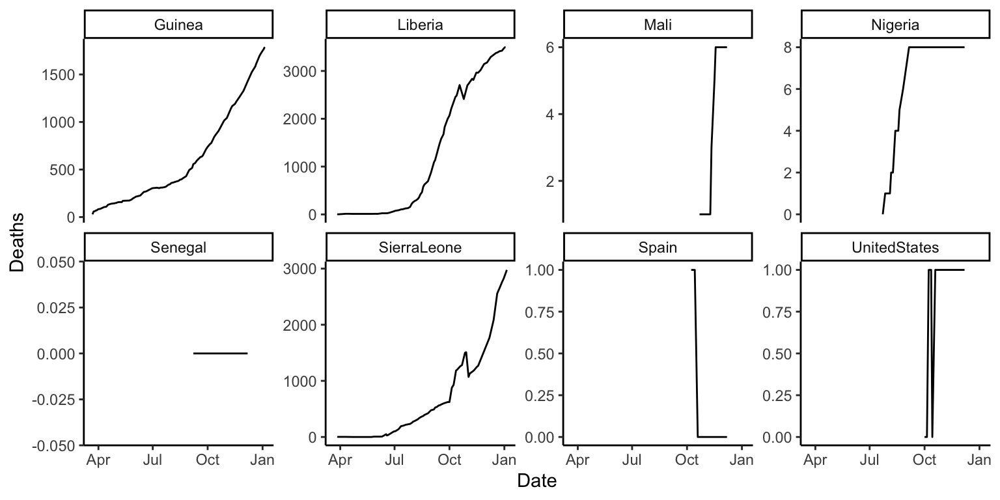

Chapter 6 Entering and cleaning data #2
Download a pdf of the lecture slides covering this topic.
6.1 Joining datasets
So far, you have only worked with a single data source at a time. When you work on your own projects, however, you typically will need to merge together two or more datasets to create the a data frame to answer your research question. For example, for air pollution epidemiology, you will often have to join several datasets:
- Health outcome data (e.g., number of deaths per day)
- Air pollution concentrations
- Weather measurements (since weather can be a confounder)
- Demographic data
The dplyr package has a family of different functions to join two dataframes together, the *_join family of functions. All combine two dataframes, which I’ll call x and y here.
The functions include:
inner_join(x, y): Keep only rows where there are observations in bothxandy.left_join(x, y): Keep all rows fromx, whether they have a match inyor not.right_join(x, y): Keep all rows fromy, whether they have a match inxor not.full_join(x, y): Keep all rows from bothxandy, whether they have a match in the other dataset or not.
In the examples, I’ll use two datasets, x and y. Both datasets include the column course. The other column in x is grade, while the other column in y is day. Observations exist for courses x and y in both datasets, but for w and z in only one dataset.
x <- data.frame(course = c("x", "y", "z"),
grade = c(90, 82, 78))
y <- data.frame(course = c("w", "x", "y"),
day = c("Tues", "Mon / Fri", "Tue"))Here is what these two example datasets look like:
## course grade
## 1 x 90
## 2 y 82
## 3 z 78## course day
## 1 w Tues
## 2 x Mon / Fri
## 3 y TueWith inner_join, you’ll only get the observations that show up in both datasets. That means you’ll lose data on z (only in the first dataset) and w (only in the second dataset).
## Joining, by = "course"## course grade day
## 1 x 90 Mon / Fri
## 2 y 82 TueWith left_join, you’ll keep everything in x (the “left” dataset), but not keep things in y that don’t match something in x. That means that, here, you’ll lose w:
## Joining, by = "course"## course grade day
## 1 x 90 Mon / Fri
## 2 y 82 Tue
## 3 z 78 <NA>right_join is the opposite:
## Joining, by = "course"## course grade day
## 1 w NA Tues
## 2 x 90 Mon / Fri
## 3 y 82 Tuefull_join keeps everything from both datasets:
## Joining, by = "course"## course grade day
## 1 x 90 Mon / Fri
## 2 y 82 Tue
## 3 z 78 <NA>
## 4 w NA Tues6.2 Tidy data
All of the material in this section comes directly from Hadley Wickham’s paper on tidy data. You will need to read this paper to prepare for the quiz on this section.
Getting your data into a “tidy” format makes it easier to model and plot. By taking the time to tidy your data at the start of an analysis, you will save yourself time, and make it easier to plan out later steps.
Characteristics of tidy data are:
- Each variable forms a column.
- Each observation forms a row.
- Each type of observational unit forms a table.
Here are five common problems that Hadley Wickham has identified that keep data from being tidy:
- Column headers are values, not variable names.
- Multiple variables are stored in one column.
- Variables are stored in both rows and columns.
- Multiple types of observational units are stored in the same table.
- A single observational unit is stored in multiple tables.
Here are examples (again, from Hadley Wickham’s paper on tidy data, which is required reading for this week of the course) of each of these problems.
- Column headers are values, not variable names.

Solution:

- Multiple variables are stored in one column.

Solution:

- Variables are stored in both rows and columns.

Solution:

- Multiple types of observational units are stored in the same table.

Solution:

- A single observational unit is stored in multiple tables.
Example: exposure and outcome data stored in different files:
- File 1: Daily mortality counts
- File 2: Daily air pollution measurements
6.3 Longer data
There are two functions from the tidyr package (another member of the tidyverse) that you can use to change between wider and longr data: pivot_longer and pivot_wider. Here is a description of these two functions:
pivot_longer: Takes several columns and pivots them down into two columns. One of the new columns contains the former column names and the other contains the former cell values.pivot_wider: Takes two columns and pivots them up into multiple columns. Column names for the new columns will come from one column and the cell values from the other.
The following examples are show the effects of making a dataset longer or wider.
Here is some simulated wide data:
## # A tibble: 3 x 4
## time X Y Z
## <date> <dbl> <dbl> <dbl>
## 1 2009-01-01 1.64 -1.32 5.95
## 2 2009-01-02 -0.156 4.52 2.64
## 3 2009-01-03 0.266 3.49 -6.36In the wide_stocks dataset, there are separate columns for three different stocks (X, Y, and Z). Each cell gives the value for a certain stock on a certain day. This data isn’t “tidy”, because the identify of the stock (X, Y, or Z) is a variable, and you’ll probably want to include it as a variable in modeling.
## # A tibble: 3 x 4
## time X Y Z
## <date> <dbl> <dbl> <dbl>
## 1 2009-01-01 1.64 -1.32 5.95
## 2 2009-01-02 -0.156 4.52 2.64
## 3 2009-01-03 0.266 3.49 -6.36If you want to convert the dataframe to have all stock values in a single column, you can use pivot_longer to convert wide data to long data:
long_stocks <- pivot_longer(data = wide_stocks,
cols = -time,
names_to = "stock",
values_to = "price")
long_stocks[1:5, ]## # A tibble: 5 x 3
## time stock price
## <date> <chr> <dbl>
## 1 2009-01-01 X 1.64
## 2 2009-01-01 Y -1.32
## 3 2009-01-01 Z 5.95
## 4 2009-01-02 X -0.156
## 5 2009-01-02 Y 4.52In this “longer” dataframe, there is now one column that gives the identify of the stock (stock) and another column that gives the price of that stock that day (price):
## # A tibble: 5 x 3
## time stock price
## <date> <chr> <dbl>
## 1 2009-01-01 X 1.64
## 2 2009-01-01 Y -1.32
## 3 2009-01-01 Z 5.95
## 4 2009-01-02 X -0.156
## 5 2009-01-02 Y 4.52The format for a pivots_longer call is:
## Generic code
new_df <- pivot_longer(old_df,
cols = [name(s) of the columns you want to make longer],
names_to = [name of new column to store the old column names],
values_to = [name of new column to store the old values])Three important notes:
- Everything is pivoted into one of two columns – one column with the old column names, and one column with the old cell values
- With the
names_toandvalues_toarguments, you are just providing column names for the two columns that everything’s pivoted into. - If there is a column you don’t want to include in the pivot (
datein the example), use-to exclude it in thecolsargument.
Notice how easy it is, now that the data is longer, to use stock for aesthetics of faceting in a ggplot2 call:

If you have data in a “longer” format and would like to make it “wider”, you can use pivot_wider to do that:
## # A tibble: 5 x 4
## time X Y Z
## <date> <dbl> <dbl> <dbl>
## 1 2009-01-01 1.64 -1.32 5.95
## 2 2009-01-02 -0.156 4.52 2.64
## 3 2009-01-03 0.266 3.49 -6.36
## 4 2009-01-04 -0.873 1.81 -0.156
## 5 2009-01-05 0.0881 -1.66 -1.36Notice that this reverses the action of pivot_longer.
The “wider” your data the less likely it is to be tidy, so won’t use pivot_wider frequently when you are preparing data for analysis. However, pivot_wider can be very helpful in creating tables for final reports and presentations.
For example, if you wanted to create a table with means and standard deviations for each of the three stocks, you could use pivot_wider to rearrange the final summary to create an attractive table.
stock_summary <- long_stocks %>%
group_by(stock) %>%
summarize(N = n(), mean = mean(price), sd = sd(price))
stock_summary## # A tibble: 3 x 4
## stock N mean sd
## <chr> <int> <dbl> <dbl>
## 1 X 10 0.0806 0.860
## 2 Y 10 1.23 2.48
## 3 Z 10 2.41 4.56stock_summary %>%
mutate("Mean (Std.dev.)" = paste0(round(mean, 2), " (",
round(sd, 2), ")")) %>%
dplyr::select(- mean, - sd) %>%
mutate(N = as.character(N)) %>% # might be able to deal with this in pivot_longer call
pivot_longer(cols = -stock, names_to = "Statistic", values_to = "Value") %>%
pivot_wider(names_from = "stock", values_from = "Value") %>%
knitr::kable()| Statistic | X | Y | Z |
|---|---|---|---|
| N | 10 | 10 | 10 |
| Mean (Std.dev.) | 0.08 (0.86) | 1.23 (2.48) | 2.41 (4.56) |
6.4 Working with factors
Hadley Wickham has developed a package called forcats that helps you work with categorical variables (factors). I’ll show some examples of its functions using the worldcup dataset:
The fct_recode function can be used to change the labels of a function (along the lines of using factor with levels and labels to reset factor labels).
One big advantage is that fct_recode lets you change labels for some, but not all, levels. For example, here are the team names:
library(stringr)
worldcup %>%
filter(str_detect(Team, "^US")) %>%
slice(1:3) %>% select(Team, Position, Time)## Team Position Time
## 1 USA Midfielder 10
## 2 USA Defender 390
## 3 USA Defender 200If you just want to change “USA” to “United States,” you can run:
worldcup <- worldcup %>%
mutate(Team = fct_recode(Team, `United States` = "USA"))
worldcup %>%
filter(str_detect(Team, "^Un")) %>%
slice(1:3) %>% select(Team, Position, Time)## Team Position Time
## 1 United States Midfielder 10
## 2 United States Defender 390
## 3 United States Defender 200You can use the fct_lump function to lump uncommon factors into an “Other” category. For example, to lump the two least common positions together, you can run (n specifies how many categories to keep outside of “Other”):
worldcup %>%
dplyr::mutate(Position = forcats::fct_lump(Position, n = 2)) %>%
dplyr::count(Position)## # A tibble: 3 x 2
## Position n
## <fct> <int>
## 1 Defender 188
## 2 Midfielder 228
## 3 Other 179You can use the fct_infreq function to reorder the levels of a factor from most common to least common:
## [1] "Defender" "Forward" "Goalkeeper" "Midfielder"## [1] "Midfielder" "Defender" "Forward" "Goalkeeper"If you want to reorder one factor by another variable (ascending order), you can use fct_reorder (e.g., homework 3). For example, to relevel Position by the average shots on goals for each position, you can run:
## [1] "Midfielder" "Defender" "Forward" "Goalkeeper"worldcup <- worldcup %>%
group_by(Position) %>%
mutate(ave_shots = mean(Shots)) %>%
ungroup() %>%
mutate(Position = fct_reorder(Position, ave_shots))
levels(worldcup$Position)## [1] "Goalkeeper" "Defender" "Midfielder" "Forward"6.5 String operations and regular expressions
For these examples, we’ll use some data on passengers of the Titanic. You can load this data using:
We will be using the stringr package:
This data includes a column called “Name” with passenger names. This column is somewhat messy and includes several elements that we might want to separate (last name, first name, title). Here are the first few values of “Name”:
## Name
## 1 Braund, Mr. Owen Harris
## 2 Cumings, Mrs. John Bradley (Florence Briggs Thayer)
## 3 Heikkinen, Miss. LainaWe’ve already done some things to manipulate strings. For example, if we wanted to separate “Name” into last name and first name (including title), we could actually do that with the separate function:
titanic_train %>%
select(Name) %>%
slice(1:3) %>%
separate(Name, c("last_name", "first_name"), sep = ", ")## last_name first_name
## 1 Braund Mr. Owen Harris
## 2 Cumings Mrs. John Bradley (Florence Briggs Thayer)
## 3 Heikkinen Miss. LainaNotice that separate is looking for a regular pattern (“,”) and then doing something based on the location of that pattern in each string (splitting the string).
There are a variety of functions in R that can perform manipulations based on finding regular patterns in character strings.
The str_detect function will look through each element of a character vector for a designated pattern. If the pattern is there, it will return TRUE, and otherwise FALSE. The convention is:
## Generic code
str_detect(string = [vector you want to check],
pattern = [pattern you want to check for])For example, to create a logical vector specifying which of the Titanic passenger names include “Mrs.”, you can call:
## [1] FALSE TRUE FALSE TRUE FALSE FALSEThe result is a logical vector, so str_detect can be used in filter to subset data to only rows where the passenger’s name includes “Mrs.”:
## Name
## 1 Cumings, Mrs. John Bradley (Florence Briggs Thayer)
## 2 Futrelle, Mrs. Jacques Heath (Lily May Peel)
## 3 Johnson, Mrs. Oscar W (Elisabeth Vilhelmina Berg)There is an older, base R function called grepl that does something very similar (although note that the order of the arguments is reversed).
## Name
## 1 Cumings, Mrs. John Bradley (Florence Briggs Thayer)
## 2 Futrelle, Mrs. Jacques Heath (Lily May Peel)
## 3 Johnson, Mrs. Oscar W (Elisabeth Vilhelmina Berg)The str_extract function can be used to extract a string (if it exists) from each value in a character vector. It follows similar conventions to str_detect:
## Generic code
str_extract(string = [vector you want to check],
pattern = [pattern you want to check for])For example, you might want to extract “Mrs.” if it exists in a passenger’s name:
## Name mrs
## 1 Braund, Mr. Owen Harris <NA>
## 2 Cumings, Mrs. John Bradley (Florence Briggs Thayer) Mrs.
## 3 Heikkinen, Miss. Laina <NA>Notice that now we’re creating a new column (mrs) that either has “Mrs.” (if there’s a match) or is missing (NA) if there’s not a match.
For this first example, we were looking for an exact string (“Mrs”). However, you can use patterns that match a particular pattern, but not an exact string. For example, we could expand the regular expression to find “Mr.” or “Mrs.”:
titanic_train %>%
mutate(title = str_extract(Name, "Mr\\.|Mrs\\.")) %>%
select(Name, title) %>%
slice(1:3)## Name title
## 1 Braund, Mr. Owen Harris Mr.
## 2 Cumings, Mrs. John Bradley (Florence Briggs Thayer) Mrs.
## 3 Heikkinen, Miss. Laina <NA>Note that this pattern uses a special operator (|) to find one pattern or another. Double backslashes (\\) escape the special character “.”.
As a note, in regular expressions, all of the following characters are special characters that need to be escaped with backslashes if you want to use them literally:
. * + ^ ? $ \ | ( ) [ ] { }Notice that “Mr.” and “Mrs.” both start with “Mr”, end with “.”, and may or may not have an “s” in between.
titanic_train %>%
mutate(title = str_extract(Name, "Mr(s)*\\.")) %>%
select(Name, title) %>%
slice(1:3)## Name title
## 1 Braund, Mr. Owen Harris Mr.
## 2 Cumings, Mrs. John Bradley (Florence Briggs Thayer) Mrs.
## 3 Heikkinen, Miss. Laina <NA>This pattern uses (s)* to match zero or more “s”s at this spot in the pattern.
In the previous code, we found “Mr.” and “Mrs.”, but missed “Miss.”. We could tweak the pattern again to try to capture that, as well. For all three, we have the pattern that it starts with “M”, has some lowercase letters, and then ends with “.”.
titanic_train %>%
mutate(title = str_extract(Name, "M[a-z]+\\.")) %>%
select(Name, title) %>%
slice(1:3)## Name title
## 1 Braund, Mr. Owen Harris Mr.
## 2 Cumings, Mrs. John Bradley (Florence Briggs Thayer) Mrs.
## 3 Heikkinen, Miss. Laina Miss.The last pattern used [a-z]+ to match one or more lowercase letters. The [a-z]is a character class.
You can also match digits ([0-9]), uppercase letters ([A-Z]), just some letters ([aeiou]), etc.
You can negate a character class by starting it with ^. For example, [^0-9] will match anything that isn’t a digit.
Sometimes, you want to match a pattern, but then only subset a part of it. For example, each passenger seems to have a title (“Mr.”, “Mrs.”, etc.) that comes after “,” and before “.”. We can use this pattern to find the title, but then we get some extra stuff with the match:
titanic_train %>%
mutate(title = str_extract(Name, ",\\s[A-Za-z]*\\.\\s")) %>%
select(title) %>%
slice(1:3)## title
## 1 , Mr.
## 2 , Mrs.
## 3 , Miss.As a note, in this pattern, \\s is used to match a space.
We are getting things like “, Mr. ”, when we really want “Mr”. We can use the str_match function to do this. We group what we want to extract from the pattern in parentheses, and then the function returns a matrix. The first column is the full pattern match, and each following column gives just what matches within the groups.
## [,1] [,2]
## [1,] ", Mr. " "Mr"
## [2,] ", Mrs. " "Mrs"
## [3,] ", Miss. " "Miss"
## [4,] ", Mrs. " "Mrs"
## [5,] ", Mr. " "Mr"
## [6,] ", Mr. " "Mr"To get just the title, then, we can run:
titanic_train %>%
mutate(title =
str_match(Name, ",\\s([A-Za-z]*)\\.\\s")[ , 2]) %>%
select(Name, title) %>%
slice(1:3)## Name title
## 1 Braund, Mr. Owen Harris Mr
## 2 Cumings, Mrs. John Bradley (Florence Briggs Thayer) Mrs
## 3 Heikkinen, Miss. Laina MissThe [ , 2] pulls out just the second column from the matrix returned by str_match.
Here are some of the most common titles:
titanic_train %>%
mutate(title =
str_match(Name, ",\\s([A-Za-z]*)\\.\\s")[ , 2]) %>%
group_by(title) %>% summarize(n = n()) %>%
arrange(desc(n)) %>% slice(1:5)## # A tibble: 5 x 2
## title n
## <chr> <int>
## 1 Mr 517
## 2 Miss 182
## 3 Mrs 125
## 4 Master 40
## 5 Dr 7Here are a few other examples of regular expressions in action with this dataset.
Get just names that start with (“^”) the letter “A”:
## Name
## 1 Allen, Mr. William Henry
## 2 Andersson, Mr. Anders Johan
## 3 Asplund, Mrs. Carl Oscar (Selma Augusta Emilia Johansson)Get names with “II” or “III” ({2,} says to match at least two times):
## Name
## 1 Carter, Master. William Thornton II
## 2 Roebling, Mr. Washington Augustus IIGet names with “Andersen” or “Anderson” (alternatives in square brackets):
## Name
## 1 Andersen-Jensen, Miss. Carla Christine Nielsine
## 2 Anderson, Mr. Harry
## 3 Walker, Mr. William Anderson
## 4 Olsvigen, Mr. Thor Anderson
## 5 Soholt, Mr. Peter Andreas Lauritz AndersenGet names that start with (“^” outside of brackets) the letters “A” and “B”:
## Name
## 1 Braund, Mr. Owen Harris
## 2 Allen, Mr. William Henry
## 3 Bonnell, Miss. ElizabethGet names that end with (“$”) the letter “b” (either lowercase or uppercase):
## Name
## 1 Emir, Mr. Farred Chehab
## 2 Goldschmidt, Mr. George B
## 3 Cook, Mr. Jacob
## 4 Pasic, Mr. JakobSome useful regular expression operators include:
| Operator | Meaning |
|---|---|
| . | Any character |
| * | Match 0 or more times (greedy) |
| *? | Match 0 or more times (non-greedy) |
| + | Match 1 or more times (greedy) |
| +? | Match 1 or more times (non-greedy) |
| ^ | Starts with (in brackets, negates) |
| $ | Ends with |
| […] | Character classes |
For more on these patterns, see:
- Help file for the
stringi-search-regexfunction in thestringipackage (which should install when you installstringr) - Chapter 14 of R For Data Science
- http://gskinner.com/RegExr: Interactive tool for helping you build regular expression pattern strings
6.6 Tidy select
There are tidyverse functions to make selecting variables more straightforwards. You can call these functions as arguments of the select function to streamline variable selection. Examples include: starts_with(), ends_with(), and contains().
Here we use starts_with("t") to select all variables that begin with t.
## Ticket
## 1 A/5 21171
## 2 PC 17599
## 3 STON/O2. 3101282The are also tidyverse functions that allow us to easily operate on a selection of variables. These functions are called scoped varients. You can identify these functions by these _all, _at, and _if suffixes.
Here we use select_if to select all the numeric variables in a dataframe and covert their names to lower case (a handy function to tidy the variable names).
## passengerid survived pclass age sibsp parch fare
## 1 1 0 3 22 1 0 7.2500
## 2 2 1 1 38 1 0 71.2833
## 3 3 1 3 26 0 0 7.9250The select_if function takes the following form.
## Generic code
new_df <- select_if(old_df,
.predicate [selects the variable to keep],
.funs = [the function to apply to the selected columns])Here we use select_at to select all the variables that contain ss in their name and then covert their names to lower case (a handy function to tidy the variable names).
## passengerid pclass
## 1 1 3
## 2 2 1
## 3 3 36.7 In-course exercise
For today’s exercise, we’ll be using the following three datasets (click on the file name to access the correct file for today’s class for each dataset):
| File name | Description |
|---|---|
country_timeseries.csv |
Ebola cases by country for the 2014 outbreak |
mexico_exposure.csv and mexico_deaths.csv |
Daily death counts and environmental measurements for Mexico City, Mexico, for 2008 |
measles_data/ |
Number of cases of measles in CA since end of Dec. 2014 |
Note that you likely have already downloaded all the files in the measles_data folder, since we used them in an earlier in-course exercise. If so, there is no need to re-download those files.
Here are the sources for this data:
country_timeseries.csv: Caitlin Rivers’ Ebola repository (Caitlin originally collected this data from the WHO and WHO Situation reports)mexico_exposure.csvandmexico_deaths.csv: one of Hadley Wickham’s GitHub repos (Hadley got the data originally from the Secretaria de Salud of Mexico’s website, although it appears the link is now broken. I separated the data into two dataframes so students could practice merging.)measles_data/: one of scarpino’s GitHub repos (Data originally from pdfs from the California Department of Public Health)
If you want to use these data further, you should go back and pull them from their original sources. They are here only for use in R code examples for this course.
Here are some of the packages you will need for this exercise:
6.7.1 Designing tidy data
- Check out the
country_timeseries.csvfile on Ebola for this week’s example data. Talk with your partner and decide what changes you would need to make to this dataset to turn it into a “tidy” dataset, in particular which of the five common “untidy” problems the data currently has and why. - Do the same for the data on daily mortality and daily weather in Mexico.
- Do the same for the set of files with measles data.
6.7.2 Easier data wrangling
- Use
read_csvto read the Mexico data (exposure and mortality) directly from GitHub into your R session. Call the dataframesmex_deathsandmex_exp. - Are there any values of the
daycolumn inmex_deathsthat is not present in thedaycolumn ofmex_exp? How about vice-versa? (Hint: There are a few ways you could check this. One is to try filtering down to just rows in one dataframe where thedayvalues are not present in thedayvalues from the other dataframe. The%in%logical vector may be useful.) - Merge the two datasets together to create the dataframe
mexico. Exclude all columns except the outcome (deaths), day, and mean temperature. - Convert the day to a Date class.
- If you did not already, try combining all the steps in the previous task into one “chained” pipeline of code using the pipe operator,
%>%. - Use this new dataframe to plot deaths by date in Mexico using
ggplot2. The final plot should look like this:

6.7.2.1 Example R code
Use read_csv to read the mexico data (exposure and mortality) directly from GitHub into your R session. Call the dataframes mex_deaths and mex_exp:
deaths_url <- paste0("https://github.com/geanders/RProgrammingForResearch/",
"raw/master/data/mexico_deaths.csv")
mex_deaths <- read_csv(deaths_url)
head(mex_deaths)## # A tibble: 6 x 2
## day deaths
## <chr> <dbl>
## 1 1/1/08 296
## 2 1/2/08 274
## 3 1/3/08 339
## 4 1/4/08 300
## 5 1/5/08 327
## 6 1/6/08 332exposure_url <- paste0("https://github.com/geanders/RProgrammingForResearch/",
"raw/master/data/mexico_exposure.csv")
mex_exp <- read_csv(exposure_url)
head(mex_exp)## # A tibble: 6 x 14
## day temp_min temp_max temp_mean humidity wind NO NO2 NOX
## <chr> <dbl> <dbl> <dbl> <dbl> <dbl> <dbl> <dbl> <dbl>
## 1 1/1/… 7.8 17.8 11.8 53.5 2.66 0.00925 0.0187 0.0278
## 2 1/2/… 2.6 9.8 6.64 61.7 3.35 0.00542 0.0187 0.0241
## 3 1/3/… 1.1 15.6 7.04 59.9 1.89 0.0160 0.0381 0.0540
## 4 1/4/… 3.1 20.6 10.9 57.5 1.20 0.0408 0.0584 0.0993
## 5 1/5/… 6 21.3 13.4 45.7 0.988 0.0469 0.0602 0.107
## 6 1/6/… 7.2 22.1 14.3 40.8 0.854 0.0286 0.051 0.0795
## # … with 5 more variables: O3 <dbl>, CO <dbl>, SO2 <dbl>, PM10 <dbl>,
## # PM25 <dbl>Check if there are any values of the day column in mex_deaths that are not present in the day column of mex_exp and vice-versa.
## # A tibble: 0 x 2
## # … with 2 variables: day <chr>, deaths <dbl>## # A tibble: 0 x 14
## # … with 14 variables: day <chr>, temp_min <dbl>, temp_max <dbl>,
## # temp_mean <dbl>, humidity <dbl>, wind <dbl>, NO <dbl>, NO2 <dbl>,
## # NOX <dbl>, O3 <dbl>, CO <dbl>, SO2 <dbl>, PM10 <dbl>, PM25 <dbl>One important note is that, when you’re doing this check, you do not want to overwrite your original dataframe, so be sure that you do not reassign this output to mex_deaths or mex_exp.
An even quicker way to do check this is to create a logical vector that checks this and use sum to add up the values in the logical vector. If the sum is zero, that tells you that the logical check is never true, so there are no cases where there is a day value in one dataframe that is not also in the other dataframe.
## [1] 0## [1] 0Merge the two datasets together to create the dataframe mexico. Exclude all columns except the outcome (deaths), date, and mean temperature.
mexico <- full_join(mex_deaths, mex_exp, by = "day")
mexico <- select(mexico, day, deaths, temp_mean)Convert the date to a date class.
Try combining all the steps in the previous task into one “chained” command:
mexico <- full_join(mex_deaths, mex_exp, by = "day") %>%
select(day, deaths, temp_mean) %>%
mutate(day = mdy(day))
head(mexico)## # A tibble: 6 x 3
## day deaths temp_mean
## <date> <dbl> <dbl>
## 1 2008-01-01 296 11.8
## 2 2008-01-02 274 6.64
## 3 2008-01-03 339 7.04
## 4 2008-01-04 300 10.9
## 5 2008-01-05 327 13.4
## 6 2008-01-06 332 14.3Note that, in this case, all the values of day in mex_deaths have one and only one matching value in mex_exp, and vice-versa. Because of this, we would have gotten the same mexico dataframe if we’d used inner_join, left_join or right_join instead of full_join. The differences between these *_join functions come into play when you have some values of your matching column that aren’t in both of the dataframes you’re joining.
Use this new dataframe to plot deaths by date using ggplot:
ggplot(data = mexico) +
geom_point(mapping = aes(x = day, y = deaths),
size = 1.5, alpha = 0.5) +
labs(x = "Date in 2008", y = "# of deaths") +
ggtitle("Deaths by date") +
theme_few() 
6.7.3 More extensive data wrangling
- Read the Ebola data directly from GitHub into your R session. Call the dataframe
ebola. - Use
dplyrfunctions to create a tidy dataset. First, change it from “wide” data to “long” data. Name the new column with the keyvariableand the new column with the valuescount. The first few lines of the “long” version of the dataset should look like this:
## # A tibble: 6 x 4
## Date Day variable count
## <chr> <dbl> <chr> <dbl>
## 1 1/5/2015 289 Cases_Guinea 2776
## 2 1/5/2015 289 Cases_Liberia NA
## 3 1/5/2015 289 Cases_SierraLeone 10030
## 4 1/5/2015 289 Cases_Nigeria NA
## 5 1/5/2015 289 Cases_Senegal NA
## 6 1/5/2015 289 Cases_UnitedStates NA- Convert the
Datecolumn to a Date class. - Use the
separatefunction to separate thevariablecolumn into two columns,type(“Cases” or “Deaths”) andcountry(“Guinea”, “Liberia”, etc.). At this point, the data should look like this:
## # A tibble: 6 x 5
## Date Day type country count
## <date> <dbl> <chr> <chr> <dbl>
## 1 2015-01-05 289 Cases Guinea 2776
## 2 2015-01-05 289 Cases Liberia NA
## 3 2015-01-05 289 Cases SierraLeone 10030
## 4 2015-01-05 289 Cases Nigeria NA
## 5 2015-01-05 289 Cases Senegal NA
## 6 2015-01-05 289 Cases UnitedStates NA- Use the
pivot_widerfunction to convert the data so you have separate columns for the two variables of numbers ofCasesandDeaths. At this point, the dataframe should look like this:
## # A tibble: 6 x 5
## Date Day country Cases Deaths
## <date> <dbl> <chr> <dbl> <dbl>
## 1 2015-01-05 289 Guinea 2776 1786
## 2 2015-01-05 289 Liberia NA NA
## 3 2015-01-05 289 SierraLeone 10030 2977
## 4 2015-01-05 289 Nigeria NA NA
## 5 2015-01-05 289 Senegal NA NA
## 6 2015-01-05 289 UnitedStates NA NA- Remove any observations where counts of both cases and deaths are missing for that country on that date.
- Now that your data is tidy, create one plot showing Ebola cases by date, faceted by country, and one showing Ebola deaths by date, also faceted by country. Try using the option
scales = "free_y"in thefacet_wrapfunction and see how that changes these graphs. Discuss with your group the advantages and disadvantages of using this option when creating these small multiple plots. The plots should look something like this (if you’re using thescales = "free_y"option):


- Based on these plots, what would your next questions be about this data before you used it for an analysis?
- Can you put all of the steps of this cleaning process into just a few “chained” code pipelines using
%>%? - If you have extra time (super-challenge!): There is a function called
fct_reorderin theforcatspackage that can be used to reorder the levels of a factor in a dataframe based on another column in the same dataframe. This function can be very useful for using a meaningful order when plotting. We’ll cover theforcatspackage in a later class, but today check out the help file forfct_reorderand see if you can figure out how to use it to reorder the small multiple plots in order of the maximum number of cases or deaths (for the two plots respectively) in each country. You’ll be able to do this by changing the code infacet_wrapfrom~ countryto~ fct_reorder(country, ...), but with the...replaced with certain arguments. If you’re getting stuck, try running the examples in thefct_reorderhelpfile to get a feel for how this function can be used when plotting. The plots will look something like this:

6.7.3.1 Example R code
Read the data in using read_csv.
ebola_url <- paste0("https://github.com/geanders/RProgrammingForResearch/",
"raw/master/data/country_timeseries.csv")
ebola <- read_csv(ebola_url)
head(ebola)## # A tibble: 6 x 18
## Date Day Cases_Guinea Cases_Liberia Cases_SierraLeo… Cases_Nigeria
## <chr> <dbl> <dbl> <dbl> <dbl> <dbl>
## 1 1/5/… 289 2776 NA 10030 NA
## 2 1/4/… 288 2775 NA 9780 NA
## 3 1/3/… 287 2769 8166 9722 NA
## 4 1/2/… 286 NA 8157 NA NA
## 5 12/3… 284 2730 8115 9633 NA
## 6 12/2… 281 2706 8018 9446 NA
## # … with 12 more variables: Cases_Senegal <dbl>, Cases_UnitedStates <dbl>,
## # Cases_Spain <dbl>, Cases_Mali <dbl>, Deaths_Guinea <dbl>,
## # Deaths_Liberia <dbl>, Deaths_SierraLeone <dbl>, Deaths_Nigeria <dbl>,
## # Deaths_Senegal <dbl>, Deaths_UnitedStates <dbl>, Deaths_Spain <dbl>,
## # Deaths_Mali <dbl>Change the data to long data using the pivoter_longer function from tidyr:
ebola <- ebola %>%
pivot_longer(cols = c(-Date, -Day), names_to = "variable", values_to = "count")
head(ebola)## # A tibble: 6 x 4
## Date Day variable count
## <chr> <dbl> <chr> <dbl>
## 1 1/5/2015 289 Cases_Guinea 2776
## 2 1/5/2015 289 Cases_Liberia NA
## 3 1/5/2015 289 Cases_SierraLeone 10030
## 4 1/5/2015 289 Cases_Nigeria NA
## 5 1/5/2015 289 Cases_Senegal NA
## 6 1/5/2015 289 Cases_UnitedStates NAConvert Date to a date class:
## # A tibble: 6 x 4
## Date Day variable count
## <date> <dbl> <chr> <dbl>
## 1 2015-01-05 289 Cases_Guinea 2776
## 2 2015-01-05 289 Cases_Liberia NA
## 3 2015-01-05 289 Cases_SierraLeone 10030
## 4 2015-01-05 289 Cases_Nigeria NA
## 5 2015-01-05 289 Cases_Senegal NA
## 6 2015-01-05 289 Cases_UnitedStates NASplit variable into type and country:
## # A tibble: 6 x 5
## Date Day type country count
## <date> <dbl> <chr> <chr> <dbl>
## 1 2015-01-05 289 Cases Guinea 2776
## 2 2015-01-05 289 Cases Liberia NA
## 3 2015-01-05 289 Cases SierraLeone 10030
## 4 2015-01-05 289 Cases Nigeria NA
## 5 2015-01-05 289 Cases Senegal NA
## 6 2015-01-05 289 Cases UnitedStates NAConvert the data so you have separate columns for the two variables of numbers of Cases and Deaths:
## # A tibble: 6 x 5
## Date Day country Cases Deaths
## <date> <dbl> <chr> <dbl> <dbl>
## 1 2015-01-05 289 Guinea 2776 1786
## 2 2015-01-05 289 Liberia NA NA
## 3 2015-01-05 289 SierraLeone 10030 2977
## 4 2015-01-05 289 Nigeria NA NA
## 5 2015-01-05 289 Senegal NA NA
## 6 2015-01-05 289 UnitedStates NA NARemove any observations where counts of cases or deaths are missing for that country:
## # A tibble: 6 x 5
## Date Day country Cases Deaths
## <date> <dbl> <chr> <dbl> <dbl>
## 1 2015-01-05 289 Guinea 2776 1786
## 2 2015-01-05 289 SierraLeone 10030 2977
## 3 2015-01-04 288 Guinea 2775 1781
## 4 2015-01-04 288 SierraLeone 9780 2943
## 5 2015-01-03 287 Guinea 2769 1767
## 6 2015-01-03 287 Liberia 8166 3496Now that your data is tidy, create one plot showing ebola cases by date, faceted by country, and one showing ebola deaths by date, also faceted by country:
ggplot(ebola, aes(x = Date, y = Cases)) +
geom_line() +
facet_wrap(~ country, ncol = 4) +
theme_classic()
ggplot(ebola, aes(x = Date, y = Deaths)) +
geom_line() +
facet_wrap(~ country, ncol = 4) +
theme_classic()
Try using the option scales = "free_y" in the facet_wrap() function (in the gridExtra package) and see how that changes these graphs:
ggplot(ebola, aes(x = Date, y = Cases)) +
geom_line() +
facet_wrap(~ country, ncol = 4, scales = "free_y") +
theme_classic()
ggplot(ebola, aes(x = Date, y = Deaths)) +
geom_line() +
facet_wrap(~ country, ncol = 4, scales = "free_y") +
theme_classic()
Put all of the steps of this cleaning process into just a few “chaining” calls.
ebola <- read_csv(ebola_url) %>%
pivot_longer(cols = c(-Date, -Day), names_to = "variable", values_to = "count") %>%
mutate(Date = mdy(Date)) %>%
separate(variable, c("type", "country"), sep = "_") %>%
pivot_wider(names_from = type, values_from = count) %>%
filter(!is.na(Cases) & !is.na(Deaths))
ggplot(ebola, aes(x = Date, y = Cases)) +
geom_line() +
facet_wrap(~ country, ncol = 4) +
theme_classic()
ggplot(ebola, aes(x = Date, y = Deaths)) +
geom_line() +
facet_wrap(~ country, ncol = 4) +
theme_classic()Use the fct_reorder function inside the facet_wrap function call to reorder the small-multiple graphs.
library(forcats)
ggplot(ebola, aes(x = Date, y = Cases)) +
geom_line() +
facet_wrap(~ fct_reorder(country, Cases, .fun = max, .desc = TRUE),
ncol = 4) +
theme_classic()
ggplot(ebola, aes(x = Date, y = Deaths)) +
geom_line() +
facet_wrap(~ fct_reorder(country, Deaths, .fun = max, .desc = TRUE),
ncol = 4) +
theme_classic()
6.7.4 Tidying VADeaths data
R comes with a dataset called VADeaths that gives death rates per 1,000 people in Virginia in 1940 by age, sex, and rural / urban.
- Use
data("VADeaths")to load this data. Make sure you understand what each column and row is showing – use the helpfile (?VADeaths) if you need. - Go through the three characteristics of tidy data and the five common problems in untidy data that we talked about in class. Sketch out (you’re welcome to use the whiteboards) what a tidy version of this data would look like.
- Open a new R script file. Write R code to transform this dataset into a tidy dataset. Try using a pipe chain, with
%>%and tidyverse functions, to clean the data. - Use the tidy data to create the following graph:

There is no example R code for this – try to figure out the code yourselves. We will go over a solution in class. You may find the RStudio Data Wrangling cheatsheet helpful for remembering which tidyverse functions do what.
6.7.5 Baby names
In the Fall 2018 session, we seem to have an unusually high percent of the class with names that start with an “A” or “K”. In this part of the exercise, we’ll see if we can figure out whether the proportion of “A” and “K” names is unusual.
There is a package on CRAN called babynames with data on baby names by year in
the United States, based on data from the U.S.’s Social Security Administration.
We will use this data to compare the proportion of “A” and “K” names in our class
with the proportion in these baby names. We’ll also do a few other things to
explore this data.
- First, check out patterns in your own name. Is your name included in this dataset? Has your name been used for males and females? How have the patterns in the proportion of babies with your name, for both males and females, changed over time (use a plot to look at this)?
- In the year you were born, what were the 5 most popular baby names for males and females? Try to come up with some attractive ways (figures and tables) to show this.
6.7.5.1 Example R code
Install and load the babynames package and its “babynames” dataframe:
Remember that you can use ?babynames to find out more about this dataframe.
Check out patterns in your own name. Is your name included in this
dataset? You can use filter to create a subset of this data where you’ve
filtered down to just the rows with your name. To see if your name ever
shows up, you can use count on this dataframe—if your name never shows
up, then you will have 0 rows in the new dataframe. As long as there’s at least
one row, your name shows up somewhere. (If your name is not in here, try
your middle or last name, or the name of a fictional character you like, for
the rest of these exercises.)
## # A tibble: 1 x 1
## n
## <int>
## 1 174Has your name been used for males and females? To figure this out, you can group
the dataset with rows with your name by the sex column and then use count to
count the number of rows in the dataset for males and females. If your name has
only been used for one gender, then only one row will result from running this
code (for an example, try my first name, “Georgiana”).
## # A tibble: 2 x 2
## # Groups: sex [2]
## sex n
## <chr> <int>
## 1 F 82
## 2 M 92How have the patterns in the proportion of babies with your name, for both males
and females, changed over time (use a plot to look at this)? To check this out,
I recommend you create a plot of the proportion of babies with your name (prop)
versus year (year). You can use color to show these patterns for males and
females separately. I’ve done some extra things here to (1) relabel the sex
factor, so the label shows up with clearer names and (2) change the labels for the
x-, y-, and color scales.
library(forcats)
my_name %>%
mutate(sex = fct_recode(sex, Male = "M", Female = "F")) %>%
ggplot(aes(x = year, y = prop, color = sex)) +
geom_line() +
labs(x = "Year", y = "Proportion of babies\nof each sex named 'Brooke'",
color = "")
In the year you were born, what were the 5 most popular baby names for males and females?
top_my_year <- babynames %>%
filter(year == 1981) %>%
group_by(sex) %>%
arrange(desc(prop)) %>%
slice(1:5)
top_my_year## # A tibble: 10 x 5
## # Groups: sex [2]
## year sex name n prop
## <dbl> <chr> <chr> <int> <dbl>
## 1 1981 F Jennifer 57049 0.0319
## 2 1981 F Jessica 42532 0.0238
## 3 1981 F Amanda 34374 0.0192
## 4 1981 F Sarah 28173 0.0158
## 5 1981 F Melissa 28000 0.0157
## 6 1981 M Michael 68765 0.0369
## 7 1981 M Christopher 50233 0.0270
## 8 1981 M Matthew 43330 0.0233
## 9 1981 M Jason 41932 0.0225
## 10 1981 M David 40659 0.0218If you’d like to show this in a prettier way, you could show this as a table:
library(knitr)
top_my_year %>%
mutate(rank = 1:n()) %>% # Since the data is grouped by sex, this will rank
# separately for females and males
ungroup() %>% # You have to ungroup before you can run `mutate` on `sex`
mutate(sex = fct_recode(sex, Male = "M", Female = "F"),
percent = round(100 * prop, 1),
percent = paste(percent, "%", sep = "")) %>%
select(sex, rank, name, percent) %>%
kable()| sex | rank | name | percent |
|---|---|---|---|
| Female | 1 | Jennifer | 3.2% |
| Female | 2 | Jessica | 2.4% |
| Female | 3 | Amanda | 1.9% |
| Female | 4 | Sarah | 1.6% |
| Female | 5 | Melissa | 1.6% |
| Male | 1 | Michael | 3.7% |
| Male | 2 | Christopher | 2.7% |
| Male | 3 | Matthew | 2.3% |
| Male | 4 | Jason | 2.3% |
| Male | 5 | David | 2.2% |
You could also show it as a figure:
library(scales)
top_my_year %>%
ungroup() %>%
mutate(name = fct_reorder(name, prop, .desc = TRUE),
sex = fct_recode(sex, Male = "M", Female = "F")) %>%
ggplot(aes(x = name)) +
geom_bar(aes(weight = prop)) +
coord_flip() +
labs(x = "", y = "Percent of babies with name in 1981") +
theme(legend.position = "top") +
scale_y_continuous(labels = percent) +
facet_wrap(~ sex, scales = "free_y") +
theme_classic()
6.7.6 More with baby names
Now let’s look at baby names based on the letter they start with.
- For the full dataframe, what proportion of baby names start with each letter? See if you can create a figure to help show this. Create the same plot using the names of people from our class.
- What proportion of names start with “A” or “K” across the full dataset? How about for the years from 1980 to 1995? Finally, how does the proportion change over the years in the dataframe?
6.7.6.1 Example R code
For the full dataframe, what proportion of baby names start with “A” or “K”?
To start, create a column with the first letter of each name. You can use
functions in the stringr package to do this. The easiest might be to
use the position of the first letter to pull that information.
library(stringr)
top_letters <- babynames %>%
mutate(first_letter = str_sub(name, 1, 1))
top_letters %>%
select(name, first_letter) %>%
slice(1:5)## # A tibble: 5 x 2
## name first_letter
## <chr> <chr>
## 1 Mary M
## 2 Anna A
## 3 Emma E
## 4 Elizabeth E
## 5 Minnie MNow we can group by letter and figure out these proportions. First, while the data is grouped, count the number of names with each letter. Then, ungroup and use mutate to divide this by the total number of names:
top_letters <- top_letters %>%
group_by(first_letter) %>%
summarize(n = sum(n)) %>%
ungroup() %>%
mutate(prop = n / sum(n)) %>%
arrange(desc(prop))
top_letters## # A tibble: 26 x 3
## first_letter n prop
## <chr> <int> <dbl>
## 1 J 44612175 0.128
## 2 M 32864210 0.0944
## 3 A 28855232 0.0829
## 4 C 25533863 0.0733
## 5 D 24240271 0.0696
## 6 R 23702794 0.0681
## 7 S 21373830 0.0614
## 8 L 18942067 0.0544
## 9 E 17033760 0.0489
## 10 K 17006684 0.0489
## # … with 16 more rowsHere’s one way to visualize this:
top_letters %>%
mutate(first_letter = fct_reorder(first_letter, prop)) %>%
ggplot(aes(x = first_letter)) +
geom_bar(aes(weight = prop)) +
coord_flip() +
scale_y_continuous(labels = percent) +
labs(x = "", y = "Percent of names that start with ...")
Create the same plot using the names of people in our class. First, create a vector with the names of people in our class:
student_list <- data_frame(name = c("Aeriel", "Rebecca", "Grant",
"Amy", "Jessy", "Alyssa",
"Camron", "Anastasia", "Kyle",
"Ana", "Amanda", "Kathleen",
"Kyle", "Ana", "Amanda", "Kathleen",
"Kayla", "Nichole", "Randy", "Katy",
"Devin"))
student_list <- student_list %>%
mutate(first_letter = str_sub(name, 1, 1))
student_list## # A tibble: 21 x 2
## name first_letter
## <chr> <chr>
## 1 Aeriel A
## 2 Rebecca R
## 3 Grant G
## 4 Amy A
## 5 Jessy J
## 6 Alyssa A
## 7 Camron C
## 8 Anastasia A
## 9 Kyle K
## 10 Ana A
## # … with 11 more rowsstudent_list %>%
group_by(first_letter) %>%
count() %>%
ungroup() %>%
mutate(prop = n / sum(n)) %>%
mutate(first_letter = fct_reorder(first_letter, prop)) %>%
ggplot(aes(x = first_letter)) +
geom_bar(aes(weight = prop)) +
coord_flip() +
scale_y_continuous(labels = percent) +
labs(x = "", y = "Percent of students with\na name that starts with ...")
What proportion of names start with “A” or “K” across the full dataset? You can create a dataframe that (1) pulls out the first letter of each name (just like we did for the last part of the question) and (2) tests whether that first letter is an “A” or a “K” (using a logical statement):
a_or_k <- babynames %>%
mutate(first_letter = str_sub(name, 1, 1),
a_or_k = first_letter %in% c("A", "K"))
a_or_k %>%
select(name, first_letter, a_or_k) %>%
slice(1:5)## # A tibble: 5 x 3
## name first_letter a_or_k
## <chr> <chr> <lgl>
## 1 Mary M FALSE
## 2 Anna A TRUE
## 3 Emma E FALSE
## 4 Elizabeth E FALSE
## 5 Minnie M FALSENext, group by this logical column (a_or_k) and figure out the number of
baby names for each group. Then, to get the proportion of the total, ungroup
and mutate to divide by the total number across the data:
## # A tibble: 2 x 3
## a_or_k n prop
## <lgl> <int> <dbl>
## 1 FALSE 1614841 0.839
## 2 TRUE 309824 0.161How about for the years from 1980 to 1995? These proportions probably change over time, so let’s try to get the proportion for a time period relevant for this class. You can get this information very similarly as the last question, just filter to this range of years first:
a_or_k_80s90s <- babynames %>%
filter(1980 <= year & year <= 1995) %>%
mutate(first_letter = str_sub(name, 1, 1),
a_or_k = first_letter %in% c("A", "K"))You can doublecheck that this dataframe has the right range of years:
## # A tibble: 1 x 2
## min_year max_year
## <dbl> <dbl>
## 1 1980 1995Now do the same calculation as we did with the full dataset:
## # A tibble: 2 x 3
## a_or_k n prop
## <lgl> <int> <dbl>
## 1 FALSE 298168 0.830
## 2 TRUE 60908 0.170Finally, how does the proportion change over the years in the dataframe? You can start
from the a_or_k dataframe we created earlier. Group by year and the logical
column a_or_k and then calculate the total number of baby names for each
combination of year and a_or_k value. Then ungroup the data, group just by year,
and get the proportion each year. Finally, filter to just the rows where a_or_k
is true and plot how this changes over the years:
## # A tibble: 276 x 3
## # Groups: year, a_or_k [276]
## year a_or_k n
## <dbl> <lgl> <int>
## 1 1880 FALSE 1788
## 2 1880 TRUE 212
## 3 1881 FALSE 1724
## 4 1881 TRUE 211
## 5 1882 FALSE 1904
## 6 1882 TRUE 223
## 7 1883 FALSE 1859
## 8 1883 TRUE 225
## 9 1884 FALSE 2059
## 10 1884 TRUE 238
## # … with 266 more rowsa_or_k_year <- a_or_k_year %>%
ungroup() %>%
group_by(year) %>%
mutate(prop = n / sum(n))
a_or_k_year## # A tibble: 276 x 4
## # Groups: year [138]
## year a_or_k n prop
## <dbl> <lgl> <int> <dbl>
## 1 1880 FALSE 1788 0.894
## 2 1880 TRUE 212 0.106
## 3 1881 FALSE 1724 0.891
## 4 1881 TRUE 211 0.109
## 5 1882 FALSE 1904 0.895
## 6 1882 TRUE 223 0.105
## 7 1883 FALSE 1859 0.892
## 8 1883 TRUE 225 0.108
## 9 1884 FALSE 2059 0.896
## 10 1884 TRUE 238 0.104
## # … with 266 more rowsa_or_k_year %>%
filter(a_or_k == TRUE) %>%
ggplot(aes(x = year, y = prop)) +
geom_line() +
scale_y_continuous(name = "Percent of baby's with names\nthat start with 'A' or 'K'",
labels = percent) +
expand_limits(y = 0)
6.7.7 Exploring taxonomic profiling data
- We’ll be using a package on Bioconductor called
microbiome. You’ll need to install that package from Bioconductor. This uses code that’s different from the default you use to download a package from CRAN. Go to the Bioconductor page for the microbiome package and figure out how to install this package based on instructions on that page. - The
microbiomethat includes tools for exploring and analysing microbiome profiling data. This package has a website with tutorial information here. We want to explore a dataset on genus-level microbiota profiling (atlas1006). Navigate to the tutorial webpage to figure out how you can get this example raw data loaded in your R session. Use theclassandstrfunctions to start exploring this data. Is it in a dataframe (tibble)? Is it in a tidy format? How is the data structured? - On the microbiome page, find the documentation describing the
atlas1006data. Look through this documentation to figure out what information is included in the data. Also, check the helpfile for this dataset and look up the original article describing the data (you can find the article information in the help resources). - The
atlas1006data is stored in a special object class called a “phyloseq” object (you should have seen this when you usedclasswith the object). You can pull certain parts of this data using special functions called “accessors”. One isget_variable. Try runningget_variablewith theatlas1006data. What do you think this data is showing? - Which different nationalities are represented by the study subjects, based on the dataframe you extracted in the last step? How many samples have each nationality? Which different BMI groups are included? Does it look like the study was balanced among these groups?
- Based on the data you extracted, does it look like diversity varies much between males and females? Across BMI groups?
- Discuss what steps you would need to take to create the following plot. To start, don’t write any code, just develop a plan. Talk about what the dataset should look like right before you create the plot and what functions you could use to get the data from its current format to that format.
- Try to write the code to create this plot. This will include some code for cleaning the data and some code for plotting. I will add one example answer after class, but I’d like you to try to figure it out yourselves first.

6.7.7.1 Example R code
Install the microbiome package from Bioconductor:
if (!requireNamespace("BiocManager", quietly = TRUE))
install.packages("BiocManager")
BiocManager::install("microbiome")Load the atlas1006 example data in the microbiome package and explore it with str and class:
## [1] "phyloseq"
## attr(,"package")
## [1] "phyloseq"## Formal class 'phyloseq' [package "phyloseq"] with 5 slots
## ..@ otu_table:Formal class 'otu_table' [package "phyloseq"] with 2 slots
## .. .. ..@ .Data : num [1:130, 1:1151] 0 0 0 21 1 72 0 0 176 10 ...
## .. .. .. ..- attr(*, "dimnames")=List of 2
## .. .. .. .. ..$ : chr [1:130] "Actinomycetaceae" "Aerococcus" "Aeromonas" "Akkermansia" ...
## .. .. .. .. ..$ : chr [1:1151] "Sample-1" "Sample-2" "Sample-3" "Sample-4" ...
## .. .. ..@ taxa_are_rows: logi TRUE
## ..@ tax_table:Formal class 'taxonomyTable' [package "phyloseq"] with 1 slot
## .. .. ..@ .Data: chr [1:130, 1:3] "Actinobacteria" "Firmicutes" "Proteobacteria" "Verrucomicrobia" ...
## .. .. .. ..- attr(*, "dimnames")=List of 2
## .. .. .. .. ..$ : chr [1:130] "Actinomycetaceae" "Aerococcus" "Aeromonas" "Akkermansia" ...
## .. .. .. .. ..$ : chr [1:3] "Phylum" "Family" "Genus"
## ..@ sam_data :'data.frame': 1151 obs. of 10 variables:
## Formal class 'sample_data' [package "phyloseq"] with 4 slots
## .. .. ..@ .Data :List of 10
## .. .. .. ..$ : int [1:1151] 28 24 52 22 25 42 25 27 21 25 ...
## .. .. .. ..$ : Factor w/ 2 levels "female","male": 2 1 2 1 1 2 1 1 1 1 ...
## .. .. .. ..$ : Factor w/ 6 levels "CentralEurope",..: 6 6 6 6 6 6 6 6 6 6 ...
## .. .. .. ..$ : Factor w/ 3 levels "o","p","r": NA NA NA NA NA NA NA NA NA NA ...
## .. .. .. ..$ : Factor w/ 40 levels "1","2","3","4",..: 1 1 1 1 1 1 1 1 1 1 ...
## .. .. .. ..$ : num [1:1151] 5.76 6.06 5.5 5.87 5.89 5.53 5.49 5.38 5.34 5.64 ...
## .. .. .. ..$ : Factor w/ 6 levels "underweight",..: 5 4 2 1 2 2 1 2 2 2 ...
## .. .. .. ..$ : Factor w/ 1006 levels "1","2","3","4",..: 1 2 3 4 5 6 7 8 9 10 ...
## .. .. .. ..$ : num [1:1151] 0 0 0 0 0 0 0 0 0 0 ...
## .. .. .. ..$ : chr [1:1151] "Sample-1" "Sample-2" "Sample-3" "Sample-4" ...
## .. .. ..@ names : chr [1:10] "age" "sex" "nationality" "DNA_extraction_method" ...
## .. .. ..@ row.names: chr [1:1151] "Sample-1" "Sample-2" "Sample-3" "Sample-4" ...
## .. .. ..@ .S3Class : chr "data.frame"
## ..@ phy_tree : NULL
## ..@ refseq : NULLPull out the data frame that contains information on each study subject in the atlas1006 data by using the get_variable accessor function:
## age sex nationality DNA_extraction_method project
## Sample-1 28 male US <NA> 1
## Sample-2 24 female US <NA> 1
## Sample-3 52 male US <NA> 1
## Sample-4 22 female US <NA> 1
## Sample-5 25 female US <NA> 1
## Sample-6 42 male US <NA> 1
## Sample-7 25 female US <NA> 1
## Sample-8 27 female US <NA> 1
## Sample-9 21 female US <NA> 1
## Sample-10 25 female US <NA> 1
## Sample-11 54 female US <NA> 1
## Sample-12 NA <NA> US <NA> 1
## Sample-13 NA <NA> US <NA> 1
## Sample-14 NA <NA> US <NA> 1
## Sample-15 58 female US <NA> 1
## Sample-16 33 female US <NA> 1
## Sample-17 28 female US <NA> 1
## Sample-18 23 female US <NA> 1
## Sample-19 37 female US <NA> 1
## Sample-20 37 female US <NA> 1
## Sample-21 60 female US <NA> 1
## Sample-22 28 female US <NA> 1
## Sample-23 52 female US <NA> 1
## Sample-24 22 female US <NA> 1
## Sample-25 21 male US <NA> 1
## Sample-26 54 female US <NA> 1
## Sample-27 33 male CentralEurope r 2
## Sample-28 39 male CentralEurope r 2
## Sample-29 36 male CentralEurope r 2
## Sample-30 50 male CentralEurope r 2
## Sample-31 54 male CentralEurope r 2
## Sample-32 54 male CentralEurope r 2
## Sample-33 NA <NA> US <NA> 3
## Sample-34 NA <NA> US <NA> 3
## Sample-35 NA <NA> US <NA> 3
## Sample-36 NA <NA> US <NA> 3
## Sample-37 NA <NA> US <NA> 3
## Sample-38 NA <NA> US <NA> 3
## Sample-39 56 male Scandinavia r 4
## Sample-40 39 female Scandinavia r 4
## Sample-41 38 female Scandinavia r 4
## Sample-42 53 male Scandinavia r 4
## Sample-43 42 female Scandinavia r 4
## Sample-44 65 male CentralEurope r 5
## Sample-45 59 male CentralEurope r 5
## Sample-46 36 male CentralEurope r 5
## Sample-47 62 male CentralEurope r 5
## Sample-48 55 male CentralEurope r 5
## Sample-49 60 male CentralEurope r 5
## Sample-50 33 male CentralEurope r 5
## Sample-51 39 male CentralEurope r 5
## Sample-52 36 male CentralEurope r 5
## Sample-53 50 male CentralEurope r 5
## Sample-54 54 male CentralEurope r 5
## Sample-55 26 male CentralEurope r 5
## Sample-56 54 male CentralEurope r 5
## Sample-57 54 male CentralEurope r 5
## Sample-58 49 male CentralEurope r 5
## Sample-59 48 male CentralEurope r 5
## Sample-60 60 male CentralEurope r 5
## Sample-61 65 male CentralEurope r 5
## Sample-62 53 male CentralEurope r 5
## Sample-63 59 male CentralEurope r 5
## Sample-64 73 female SouthEurope r 6
## Sample-65 63 male SouthEurope r 6
## Sample-66 66 male SouthEurope r 6
## Sample-67 63 male SouthEurope r 6
## Sample-68 65 female SouthEurope r 6
## Sample-69 62 male SouthEurope r 6
## Sample-70 77 male SouthEurope r 6
## Sample-71 60 female SouthEurope r 6
## Sample-72 59 male SouthEurope r 6
## Sample-73 74 female SouthEurope r 6
## Sample-74 75 male SouthEurope r 6
## Sample-75 70 male SouthEurope r 6
## Sample-76 75 male SouthEurope r 6
## Sample-77 75 male SouthEurope r 6
## Sample-78 70 male SouthEurope r 6
## Sample-79 75 female SouthEurope r 6
## Sample-80 76 male SouthEurope r 6
## Sample-81 70 female SouthEurope r 6
## Sample-82 63 female SouthEurope r 6
## Sample-83 70 female SouthEurope r 6
## Sample-84 76 male SouthEurope r 6
## Sample-85 71 female SouthEurope r 6
## Sample-86 75 male SouthEurope r 6
## Sample-87 67 male SouthEurope r 6
## Sample-88 26 male SouthEurope r 6
## Sample-89 25 male SouthEurope r 6
## Sample-90 29 male SouthEurope r 6
## Sample-91 32 male SouthEurope r 6
## Sample-92 27 female SouthEurope r 6
## Sample-93 28 female SouthEurope r 6
## Sample-94 26 female SouthEurope r 6
## Sample-95 25 female SouthEurope r 6
## Sample-96 37 male SouthEurope r 6
## Sample-97 34 male SouthEurope r 6
## Sample-98 31 male SouthEurope r 6
## Sample-99 38 male SouthEurope r 6
## Sample-100 31 female SouthEurope r 6
## Sample-101 31 female SouthEurope r 6
## Sample-102 37 female SouthEurope r 6
## Sample-103 29 male SouthEurope r 6
## Sample-104 40 male SouthEurope r 6
## Sample-105 30 female SouthEurope r 6
## Sample-106 52 female CentralEurope r 7
## Sample-107 21 female CentralEurope r 7
## Sample-108 55 male CentralEurope r 7
## Sample-109 58 female CentralEurope r 7
## Sample-110 65 male CentralEurope r 7
## Sample-111 52 female CentralEurope r 7
## Sample-112 23 male CentralEurope r 7
## Sample-113 50 female CentralEurope r 7
## Sample-114 59 male CentralEurope r 7
## Sample-115 54 male CentralEurope r 7
## Sample-116 23 female CentralEurope r 7
## Sample-117 60 female CentralEurope r 7
## Sample-118 52 female CentralEurope r 7
## Sample-119 46 female CentralEurope r 7
## Sample-120 56 male CentralEurope r 7
## Sample-121 52 female CentralEurope r 7
## Sample-122 59 female CentralEurope r 7
## Sample-123 26 female CentralEurope r 7
## Sample-124 63 male CentralEurope r 7
## Sample-125 23 female CentralEurope r 7
## Sample-126 50 female CentralEurope r 7
## Sample-127 36 male CentralEurope r 7
## Sample-128 64 male CentralEurope r 7
## Sample-129 58 female CentralEurope r 7
## Sample-130 60 female CentralEurope r 7
## Sample-131 52 female CentralEurope r 7
## Sample-132 27 female CentralEurope r 7
## Sample-133 53 female CentralEurope r 7
## Sample-134 38 male CentralEurope r 7
## Sample-135 58 female CentralEurope r 7
## Sample-136 51 female CentralEurope r 7
## Sample-137 25 female CentralEurope r 7
## Sample-138 30 female CentralEurope r 7
## Sample-139 21 female CentralEurope r 7
## Sample-140 31 male CentralEurope r 7
## Sample-141 31 female CentralEurope r 7
## Sample-142 65 female CentralEurope r 7
## Sample-143 58 female CentralEurope r 7
## Sample-144 49 female CentralEurope r 7
## Sample-145 48 male CentralEurope r 7
## Sample-146 62 female CentralEurope r 7
## Sample-147 26 male CentralEurope r 7
## Sample-148 23 female CentralEurope r 7
## Sample-149 30 female CentralEurope r 7
## Sample-150 24 female CentralEurope r 7
## Sample-151 25 female CentralEurope r 7
## Sample-152 22 female CentralEurope r 7
## Sample-153 28 female CentralEurope r 7
## Sample-154 34 female CentralEurope r 7
## Sample-155 22 female CentralEurope r 7
## Sample-156 29 female CentralEurope r 7
## Sample-157 47 male CentralEurope r 7
## Sample-158 30 male CentralEurope r 7
## Sample-159 37 male CentralEurope r 7
## Sample-160 25 female CentralEurope r 7
## Sample-161 27 male CentralEurope r 7
## Sample-162 22 female CentralEurope r 7
## Sample-163 26 female CentralEurope r 7
## Sample-164 46 female CentralEurope r 7
## Sample-165 43 female CentralEurope r 7
## Sample-166 26 female CentralEurope r 7
## Sample-167 31 male CentralEurope r 7
## Sample-168 22 female CentralEurope r 7
## Sample-169 23 female CentralEurope r 7
## Sample-170 27 female CentralEurope r 7
## Sample-171 22 female CentralEurope r 7
## Sample-172 26 male CentralEurope r 7
## Sample-173 25 female CentralEurope r 7
## Sample-174 23 female CentralEurope r 7
## Sample-175 20 female CentralEurope r 7
## Sample-176 43 female CentralEurope r 7
## Sample-177 23 male CentralEurope r 7
## Sample-178 52 male CentralEurope r 7
## Sample-179 30 female CentralEurope r 7
## Sample-180 29 female CentralEurope r 7
## Sample-181 25 female CentralEurope r 7
## Sample-182 25 female CentralEurope r 7
## Sample-183 23 female CentralEurope r 7
## Sample-184 40 female CentralEurope r 7
## Sample-185 27 female CentralEurope r 7
## Sample-186 53 female CentralEurope r 7
## Sample-187 55 female CentralEurope r 7
## Sample-188 48 female CentralEurope r 7
## Sample-189 44 female CentralEurope r 7
## Sample-190 34 female CentralEurope r 7
## Sample-191 52 female CentralEurope r 7
## Sample-192 45 female CentralEurope r 7
## Sample-193 22 male CentralEurope r 7
## Sample-194 49 male CentralEurope r 7
## Sample-195 24 female CentralEurope r 7
## Sample-196 48 female CentralEurope r 7
## Sample-197 47 female CentralEurope r 7
## Sample-198 46 female CentralEurope r 7
## Sample-199 62 female CentralEurope r 7
## Sample-200 20 female CentralEurope r 7
## Sample-201 34 female CentralEurope r 7
## Sample-202 24 female CentralEurope r 7
## Sample-203 63 male CentralEurope r 7
## Sample-204 40 female CentralEurope r 7
## Sample-205 21 female CentralEurope r 7
## Sample-206 26 female CentralEurope r 7
## Sample-207 37 female CentralEurope r 7
## Sample-208 28 female CentralEurope r 7
## Sample-209 52 female CentralEurope r 7
## Sample-210 46 female CentralEurope r 7
## Sample-211 43 female CentralEurope r 7
## Sample-212 51 female CentralEurope r 7
## Sample-213 35 female UKIE <NA> 8
## Sample-214 26 male UKIE <NA> 8
## Sample-215 24 male UKIE <NA> 8
## Sample-216 27 female UKIE <NA> 8
## Sample-217 42 female Scandinavia r 9
## Sample-218 34 male Scandinavia r 9
## Sample-219 40 female Scandinavia r 9
## Sample-220 61 male Scandinavia r 9
## Sample-221 46 female Scandinavia r 9
## Sample-222 52 female Scandinavia r 9
## Sample-223 38 female Scandinavia r 9
## Sample-224 59 female Scandinavia r 9
## Sample-225 49 female Scandinavia r 9
## Sample-226 60 female Scandinavia r 9
## Sample-227 45 female Scandinavia r 9
## Sample-228 53 female Scandinavia r 9
## Sample-229 56 male Scandinavia r 9
## Sample-230 61 female Scandinavia r 9
## Sample-231 55 female Scandinavia r 9
## Sample-232 32 male Scandinavia r 9
## Sample-233 45 female Scandinavia r 9
## Sample-234 54 female Scandinavia r 9
## Sample-235 56 female Scandinavia r 9
## Sample-236 56 male Scandinavia r 9
## Sample-237 40 female Scandinavia r 9
## Sample-238 58 female Scandinavia r 9
## Sample-239 63 male Scandinavia r 9
## Sample-240 55 female Scandinavia r 9
## Sample-241 42 female Scandinavia r 9
## Sample-242 52 female Scandinavia r 9
## Sample-243 51 female Scandinavia r 9
## Sample-244 50 female Scandinavia r 9
## Sample-245 31 female Scandinavia r 9
## Sample-246 52 male Scandinavia r 9
## Sample-247 54 female Scandinavia o 9
## Sample-248 46 female Scandinavia p 9
## Sample-249 34 female Scandinavia p 9
## Sample-250 43 male Scandinavia o 9
## Sample-251 37 male Scandinavia p 9
## Sample-252 NA male CentralEurope <NA> 9
## Sample-253 NA male CentralEurope <NA> 9
## Sample-254 NA male CentralEurope <NA> 9
## Sample-255 NA male CentralEurope <NA> 9
## Sample-256 NA male CentralEurope <NA> 9
## Sample-257 NA male CentralEurope <NA> 9
## Sample-258 NA male CentralEurope <NA> 9
## Sample-259 NA male CentralEurope <NA> 9
## Sample-260 NA male CentralEurope <NA> 9
## Sample-261 NA male CentralEurope <NA> 9
## Sample-262 NA male CentralEurope <NA> 9
## Sample-263 NA male CentralEurope <NA> 9
## Sample-264 NA male CentralEurope <NA> 9
## Sample-265 NA male CentralEurope <NA> 9
## Sample-266 NA male CentralEurope <NA> 9
## Sample-267 NA male CentralEurope <NA> 9
## Sample-268 NA male CentralEurope <NA> 9
## Sample-269 NA male CentralEurope <NA> 9
## Sample-270 NA male CentralEurope <NA> 9
## Sample-271 66 female CentralEurope <NA> 9
## Sample-272 62 male CentralEurope <NA> 9
## Sample-273 43 male CentralEurope <NA> 9
## Sample-274 50 female CentralEurope <NA> 9
## Sample-275 27 female CentralEurope <NA> 9
## Sample-276 26 male CentralEurope <NA> 9
## Sample-277 55 female CentralEurope <NA> 9
## Sample-278 33 male CentralEurope <NA> 9
## Sample-279 52 male CentralEurope <NA> 9
## Sample-280 54 male CentralEurope <NA> 9
## Sample-281 24 male CentralEurope r 9
## Sample-282 24 male CentralEurope r 9
## Sample-283 26 male CentralEurope r 9
## Sample-284 21 male CentralEurope r 9
## Sample-285 20 male CentralEurope r 9
## Sample-286 23 male CentralEurope r 9
## Sample-287 23 male CentralEurope r 9
## Sample-288 24 male CentralEurope r 9
## Sample-289 25 male CentralEurope r 9
## Sample-290 51 male CentralEurope r 9
## Sample-291 19 male CentralEurope r 9
## Sample-292 29 male CentralEurope r 9
## Sample-293 26 male CentralEurope r 9
## Sample-294 24 male CentralEurope r 9
## Sample-295 20 male CentralEurope r 9
## Sample-296 25 male CentralEurope r 9
## Sample-297 26 male CentralEurope r 9
## Sample-298 37 male CentralEurope r 9
## Sample-299 20 male CentralEurope r 9
## Sample-300 23 male CentralEurope r 9
## Sample-301 43 male CentralEurope r 10
## Sample-302 20 male CentralEurope r 10
## Sample-303 46 male CentralEurope r 10
## Sample-304 20 male CentralEurope r 10
## Sample-305 21 male CentralEurope r 10
## Sample-306 20 male CentralEurope r 11
## Sample-307 49 male CentralEurope r 11
## Sample-308 20 male CentralEurope r 11
## Sample-309 54 female <NA> <NA> 11
## Sample-310 53 female <NA> <NA> 11
## Sample-311 31 male Scandinavia r 11
## Sample-312 36 female EasternEurope r 11
## Sample-313 37 female Scandinavia r 11
## Sample-314 31 female Scandinavia r 11
## Sample-315 56 male CentralEurope r 11
## Sample-316 39 female CentralEurope r 11
## Sample-317 48 male CentralEurope r 11
## Sample-318 44 male CentralEurope r 11
## Sample-319 44 male CentralEurope r 11
## Sample-320 71 female CentralEurope r 11
## Sample-321 49 female CentralEurope r 11
## Sample-322 57 male CentralEurope r 11
## Sample-323 25 female CentralEurope r 11
## Sample-324 52 female CentralEurope r 11
## Sample-325 47 female CentralEurope r 12
## Sample-326 63 female CentralEurope r 12
## Sample-327 51 female CentralEurope r 12
## Sample-328 49 female CentralEurope r 12
## Sample-329 46 female CentralEurope r 12
## Sample-330 58 female CentralEurope r 12
## Sample-331 49 female CentralEurope r 12
## Sample-332 48 female CentralEurope r 12
## Sample-333 33 female CentralEurope r 12
## Sample-334 32 female CentralEurope r 12
## Sample-335 53 male CentralEurope r 13
## Sample-336 42 male CentralEurope r 13
## Sample-337 20 female CentralEurope r 13
## Sample-338 19 male CentralEurope r 13
## Sample-339 20 female CentralEurope r 13
## Sample-340 18 female CentralEurope r 13
## Sample-341 42 female CentralEurope r 13
## Sample-342 21 female CentralEurope r 13
## Sample-343 49 male CentralEurope r 13
## Sample-344 26 female CentralEurope r 13
## Sample-345 20 female CentralEurope r 13
## Sample-346 21 male CentralEurope r 13
## Sample-347 19 female CentralEurope r 13
## Sample-348 19 male CentralEurope r 13
## Sample-349 27 female CentralEurope r 13
## Sample-350 21 male CentralEurope r 13
## Sample-351 37 female CentralEurope r 13
## Sample-352 24 female CentralEurope r 13
## Sample-353 49 female CentralEurope o 13
## Sample-354 53 female CentralEurope o 13
## Sample-355 50 female CentralEurope o 13
## Sample-356 59 female CentralEurope o 13
## Sample-357 51 female CentralEurope o 13
## Sample-358 52 female CentralEurope o 13
## Sample-359 61 female CentralEurope o 13
## Sample-360 45 female CentralEurope o 13
## Sample-361 49 female CentralEurope o 13
## Sample-362 48 female CentralEurope o 13
## Sample-363 50 female CentralEurope o 14
## Sample-364 36 female CentralEurope o 14
## Sample-365 42 female CentralEurope o 15
## Sample-366 52 female CentralEurope o 15
## Sample-367 45 female CentralEurope o 15
## Sample-368 36 female CentralEurope o 15
## Sample-369 61 female CentralEurope o 16
## Sample-370 57 female CentralEurope o 16
## Sample-371 51 female CentralEurope o 16
## Sample-372 43 female CentralEurope o 16
## Sample-373 42 female CentralEurope o 16
## Sample-374 57 female CentralEurope o 16
## Sample-375 45 female CentralEurope o 16
## Sample-376 40 female CentralEurope o 16
## Sample-377 62 female CentralEurope o 16
## Sample-378 35 female CentralEurope o 16
## Sample-379 53 female CentralEurope o 16
## Sample-380 53 female CentralEurope o 16
## Sample-381 34 female CentralEurope o 16
## Sample-382 37 female CentralEurope o 16
## Sample-383 43 female CentralEurope o 16
## Sample-384 53 female CentralEurope o 16
## Sample-385 30 female CentralEurope o 16
## Sample-386 32 female SouthEurope o 16
## Sample-387 25 male SouthEurope o 16
## Sample-388 63 female SouthEurope o 16
## Sample-389 37 female SouthEurope o 16
## Sample-390 62 female SouthEurope o 16
## Sample-391 66 male SouthEurope o 17
## Sample-392 61 female SouthEurope o 17
## Sample-393 46 male SouthEurope o 17
## Sample-394 41 female SouthEurope o 17
## Sample-395 56 male SouthEurope o 17
## Sample-396 31 male SouthEurope o 17
## Sample-397 34 female SouthEurope o 17
## Sample-398 19 male SouthEurope o 17
## Sample-399 54 female SouthEurope o 17
## Sample-400 32 female SouthEurope o 17
## Sample-401 27 female SouthEurope o 17
## Sample-402 20 male SouthEurope o 17
## Sample-403 55 female SouthEurope o 17
## Sample-404 26 male SouthEurope o 17
## Sample-405 32 female SouthEurope o 17
## Sample-406 38 female SouthEurope o 17
## Sample-407 33 male SouthEurope o 18
## Sample-408 37 female SouthEurope o 18
## Sample-409 19 female SouthEurope o 18
## Sample-410 22 male SouthEurope o 18
## Sample-411 32 male SouthEurope o 18
## Sample-412 49 female CentralEurope o 18
## Sample-413 59 female CentralEurope o 18
## Sample-414 59 male CentralEurope o 18
## Sample-415 59 female CentralEurope o 18
## Sample-416 69 male CentralEurope o 18
## Sample-417 59 male CentralEurope o 18
## Sample-418 64 male CentralEurope o 18
## Sample-419 59 female CentralEurope o 18
## Sample-420 54 male CentralEurope o 18
## Sample-421 64 male CentralEurope o 18
## Sample-422 49 male CentralEurope o 18
## Sample-423 44 female CentralEurope o 18
## Sample-424 64 male CentralEurope o 18
## Sample-425 44 female CentralEurope o 18
## Sample-426 69 male CentralEurope o 18
## Sample-427 54 male CentralEurope o 18
## Sample-428 49 male CentralEurope o 18
## Sample-429 44 male CentralEurope o 18
## Sample-430 54 female CentralEurope o 18
## Sample-431 49 male CentralEurope o 18
## Sample-432 64 male CentralEurope o 18
## Sample-433 59 male CentralEurope o 18
## Sample-434 54 male CentralEurope o 18
## Sample-435 44 female CentralEurope o 18
## Sample-436 49 male CentralEurope o 18
## Sample-437 49 female CentralEurope o 18
## Sample-438 49 female CentralEurope o 18
## Sample-439 49 male CentralEurope o 18
## Sample-440 59 male CentralEurope o 18
## Sample-441 54 female CentralEurope o 18
## Sample-442 54 female CentralEurope o 18
## Sample-443 59 male CentralEurope o 18
## Sample-444 64 male CentralEurope o 18
## Sample-445 69 female CentralEurope o 18
## Sample-446 49 female CentralEurope o 18
## Sample-447 59 male CentralEurope o 18
## Sample-448 54 female CentralEurope o 18
## Sample-449 59 male CentralEurope o 18
## Sample-450 44 female CentralEurope o 18
## Sample-451 54 male CentralEurope o 18
## Sample-452 54 female CentralEurope o 18
## Sample-453 59 female CentralEurope o 18
## Sample-454 49 male CentralEurope o 18
## Sample-455 45 female CentralEurope o 18
## Sample-456 64 female CentralEurope o 18
## Sample-457 54 male CentralEurope o 18
## Sample-458 49 female CentralEurope o 18
## Sample-459 64 male CentralEurope o 18
## Sample-460 69 female CentralEurope o 18
## Sample-461 49 female CentralEurope o 18
## Sample-462 49 female CentralEurope o 18
## Sample-463 65 female CentralEurope o 18
## Sample-464 50 female CentralEurope o 18
## Sample-465 60 female CentralEurope o 18
## Sample-466 55 female CentralEurope o 18
## Sample-467 64 male CentralEurope o 18
## Sample-468 59 female CentralEurope o 18
## Sample-469 60 female CentralEurope o 18
## Sample-470 55 female CentralEurope o 18
## Sample-471 59 male CentralEurope o 18
## Sample-472 55 female CentralEurope o 19
## Sample-473 64 female CentralEurope o 19
## Sample-474 50 female CentralEurope o 19
## Sample-475 50 male CentralEurope o 19
## Sample-476 49 female CentralEurope o 19
## Sample-477 49 female CentralEurope o 19
## Sample-478 64 male CentralEurope o 19
## Sample-479 64 female CentralEurope o 19
## Sample-480 53 female CentralEurope o 19
## Sample-481 55 male CentralEurope o 19
## Sample-482 59 male CentralEurope o 19
## Sample-483 64 female CentralEurope o 19
## Sample-484 69 male CentralEurope o 19
## Sample-485 49 male CentralEurope o 19
## Sample-486 59 female CentralEurope o 19
## Sample-487 53 female CentralEurope o 19
## Sample-488 54 male CentralEurope o 19
## Sample-489 44 female CentralEurope o 19
## Sample-490 60 female CentralEurope o 19
## Sample-491 54 female CentralEurope o 19
## Sample-492 49 male CentralEurope o 19
## Sample-493 54 male CentralEurope o 19
## Sample-494 44 female CentralEurope o 19
## Sample-495 69 male CentralEurope o 19
## Sample-496 55 male CentralEurope o 19
## Sample-497 45 male CentralEurope o 19
## Sample-498 59 female CentralEurope o 19
## Sample-499 59 male CentralEurope o 19
## Sample-500 59 female CentralEurope o 19
## Sample-501 65 male CentralEurope o 19
## Sample-502 64 male CentralEurope o 19
## Sample-503 49 male CentralEurope o 19
## Sample-504 65 female CentralEurope o 19
## Sample-505 60 female CentralEurope o 19
## Sample-506 59 male CentralEurope o 19
## Sample-507 44 male CentralEurope o 19
## Sample-508 54 male CentralEurope o 19
## Sample-509 60 male CentralEurope o 19
## Sample-510 55 male CentralEurope o 19
## Sample-511 45 female CentralEurope o 19
## Sample-512 59 female CentralEurope o 19
## Sample-513 70 male CentralEurope o 19
## Sample-514 65 male CentralEurope o 19
## Sample-515 54 female CentralEurope o 19
## Sample-516 59 male CentralEurope o 19
## Sample-517 40 female CentralEurope o 19
## Sample-518 49 male CentralEurope o 19
## Sample-519 64 female CentralEurope o 19
## Sample-520 63 female CentralEurope o 19
## Sample-521 59 female CentralEurope o 19
## Sample-522 49 female CentralEurope o 19
## Sample-523 60 female CentralEurope o 19
## Sample-524 49 female CentralEurope o 19
## Sample-525 53 female CentralEurope o 19
## Sample-526 50 female CentralEurope o 19
## Sample-527 64 female CentralEurope o 19
## Sample-528 45 male CentralEurope o 19
## Sample-529 59 male CentralEurope o 19
## Sample-530 50 female CentralEurope o 19
## Sample-531 59 female CentralEurope o 19
## Sample-532 64 male CentralEurope o 19
## Sample-533 49 female CentralEurope o 19
## Sample-534 40 male CentralEurope o 19
## Sample-535 65 female CentralEurope o 19
## Sample-536 64 female CentralEurope o 19
## Sample-537 54 male CentralEurope o 19
## Sample-538 55 male CentralEurope o 19
## Sample-539 44 male CentralEurope o 19
## Sample-540 60 male CentralEurope o 19
## Sample-541 45 male CentralEurope o 19
## Sample-542 59 male CentralEurope o 19
## Sample-543 70 male CentralEurope o 19
## Sample-544 49 female CentralEurope o 19
## Sample-545 59 male CentralEurope o 19
## Sample-546 50 male CentralEurope o 19
## Sample-547 50 male CentralEurope o 19
## Sample-548 54 male CentralEurope o 19
## Sample-549 65 male CentralEurope o 19
## Sample-550 49 female CentralEurope o 19
## Sample-551 50 female CentralEurope o 19
## Sample-552 64 male CentralEurope o 19
## Sample-553 39 male CentralEurope o 19
## Sample-554 59 female CentralEurope o 19
## Sample-555 60 female CentralEurope o 19
## Sample-556 44 male CentralEurope o 19
## Sample-557 55 female CentralEurope o 19
## Sample-558 59 female CentralEurope o 19
## Sample-559 55 female CentralEurope o 19
## Sample-560 59 female CentralEurope o 19
## Sample-561 60 female CentralEurope o 19
## Sample-562 39 female CentralEurope o 19
## Sample-563 50 female CentralEurope o 19
## Sample-564 50 female CentralEurope o 19
## Sample-565 50 male CentralEurope o 19
## Sample-566 54 female CentralEurope o 19
## Sample-567 56 female CentralEurope o 19
## Sample-568 46 male CentralEurope o 19
## Sample-569 60 female CentralEurope o 19
## Sample-570 65 female CentralEurope o 19
## Sample-571 49 female CentralEurope o 19
## Sample-572 54 female CentralEurope o 19
## Sample-573 55 female CentralEurope o 19
## Sample-574 51 male CentralEurope o 19
## Sample-575 55 female CentralEurope o 19
## Sample-576 55 female CentralEurope o 19
## Sample-577 50 female CentralEurope o 19
## Sample-578 56 female CentralEurope o 19
## Sample-579 50 female CentralEurope o 19
## Sample-580 54 female CentralEurope o 19
## Sample-581 54 female CentralEurope o 19
## Sample-582 61 female CentralEurope o 19
## Sample-583 66 female CentralEurope o 19
## Sample-584 61 male CentralEurope o 19
## Sample-585 71 female CentralEurope o 19
## Sample-586 71 male CentralEurope o 19
## Sample-587 51 male CentralEurope o 19
## Sample-588 50 female CentralEurope o 19
## Sample-589 55 female CentralEurope o 19
## Sample-590 61 female CentralEurope o 19
## Sample-591 56 female CentralEurope o 19
## Sample-592 70 female CentralEurope o 19
## Sample-593 60 male CentralEurope o 19
## Sample-594 51 female CentralEurope o 19
## Sample-595 60 male CentralEurope o 19
## Sample-596 56 male CentralEurope o 19
## Sample-597 45 male CentralEurope o 19
## Sample-598 61 male CentralEurope o 19
## Sample-599 56 male CentralEurope o 19
## Sample-600 56 female CentralEurope o 19
## Sample-601 55 male CentralEurope o 19
## Sample-602 50 female CentralEurope o 19
## Sample-603 50 female CentralEurope o 19
## Sample-604 71 female CentralEurope o 19
## Sample-605 60 female CentralEurope o 19
## Sample-606 45 female CentralEurope o 19
## Sample-607 61 female CentralEurope o 19
## Sample-608 65 female CentralEurope o 19
## Sample-609 55 male CentralEurope o 19
## Sample-610 55 male CentralEurope o 19
## Sample-611 71 female CentralEurope o 19
## Sample-612 56 female CentralEurope o 19
## Sample-613 50 male CentralEurope o 19
## Sample-614 64 female CentralEurope o 19
## Sample-615 53 female CentralEurope o 19
## Sample-616 48 female CentralEurope o 19
## Sample-617 50 female CentralEurope o 19
## Sample-618 37 male CentralEurope o 19
## Sample-619 53 male CentralEurope o 19
## Sample-620 55 male CentralEurope o 19
## Sample-621 65 male CentralEurope o 19
## Sample-622 46 male CentralEurope o 19
## Sample-623 57 male CentralEurope o 19
## Sample-624 51 female CentralEurope o 19
## Sample-625 63 female CentralEurope o 19
## Sample-626 50 male CentralEurope o 19
## Sample-627 44 male CentralEurope o 19
## Sample-628 53 male CentralEurope o 19
## Sample-629 63 female CentralEurope o 19
## Sample-630 41 male CentralEurope o 19
## Sample-631 55 male CentralEurope o 19
## Sample-632 47 male CentralEurope o 19
## Sample-633 49 male CentralEurope o 19
## Sample-634 45 male CentralEurope o 19
## Sample-635 51 female CentralEurope o 19
## Sample-636 40 female CentralEurope o 19
## Sample-637 60 female CentralEurope o 19
## Sample-638 53 female CentralEurope o 19
## Sample-639 64 male CentralEurope o 19
## Sample-640 52 female CentralEurope o 19
## Sample-641 47 female CentralEurope o 19
## Sample-642 56 male CentralEurope o 19
## Sample-643 61 male CentralEurope o 19
## Sample-644 62 male CentralEurope o 19
## Sample-645 57 male CentralEurope o 19
## Sample-646 45 female CentralEurope o 19
## Sample-647 61 male CentralEurope o 19
## Sample-648 67 male CentralEurope o 19
## Sample-649 72 male CentralEurope o 19
## Sample-650 46 female CentralEurope o 19
## Sample-651 56 male CentralEurope o 19
## Sample-652 62 female CentralEurope o 19
## Sample-653 51 male CentralEurope o 19
## Sample-654 66 male CentralEurope o 19
## Sample-655 62 male CentralEurope o 19
## Sample-656 51 male CentralEurope o 19
## Sample-657 67 male CentralEurope o 19
## Sample-658 56 male CentralEurope o 19
## Sample-659 57 female CentralEurope o 19
## Sample-660 62 female CentralEurope o 19
## Sample-661 51 male CentralEurope o 19
## Sample-662 66 female CentralEurope o 19
## Sample-663 56 male CentralEurope o 19
## Sample-664 62 female CentralEurope o 19
## Sample-665 62 female CentralEurope o 19
## Sample-666 47 female CentralEurope o 19
## Sample-667 51 male CentralEurope o 19
## Sample-668 57 male CentralEurope o 19
## Sample-669 61 female CentralEurope o 19
## Sample-670 61 female CentralEurope o 19
## Sample-671 50 female CentralEurope o 19
## Sample-672 57 male CentralEurope o 19
## Sample-673 71 male CentralEurope o 19
## Sample-674 72 female CentralEurope o 19
## Sample-675 46 male CentralEurope o 19
## Sample-676 56 male CentralEurope o 19
## Sample-677 57 female CentralEurope o 19
## Sample-678 52 female CentralEurope o 19
## Sample-679 52 male CentralEurope o 19
## Sample-680 60 female CentralEurope o 19
## Sample-681 61 male CentralEurope o 19
## Sample-682 66 male CentralEurope o 19
## Sample-683 51 male CentralEurope o 19
## Sample-684 51 male CentralEurope o 19
## Sample-685 62 female CentralEurope o 19
## Sample-686 62 male CentralEurope o 19
## Sample-687 46 male CentralEurope o 19
## Sample-688 61 female CentralEurope o 19
## Sample-689 40 female CentralEurope o 19
## Sample-690 60 female CentralEurope o 19
## Sample-691 50 female CentralEurope o 19
## Sample-692 70 male CentralEurope o 19
## Sample-693 61 male CentralEurope o 19
## Sample-694 61 female CentralEurope o 19
## Sample-695 56 female CentralEurope o 19
## Sample-696 61 male CentralEurope o 19
## Sample-697 50 male CentralEurope o 19
## Sample-698 67 female CentralEurope o 19
## Sample-699 62 female SouthEurope o 19
## Sample-700 68 male SouthEurope o 19
## Sample-701 41 female SouthEurope o 19
## Sample-702 49 male SouthEurope o 19
## Sample-703 18 female SouthEurope o 19
## Sample-704 46 female SouthEurope o 19
## Sample-705 36 female SouthEurope o 19
## Sample-706 51 male SouthEurope o 19
## Sample-707 48 female SouthEurope o 19
## Sample-708 25 male SouthEurope o 19
## Sample-709 63 female SouthEurope o 19
## Sample-710 37 female SouthEurope o 19
## Sample-711 38 female SouthEurope o 19
## Sample-712 19 female SouthEurope o 19
## Sample-713 22 male SouthEurope o 19
## Sample-714 32 male SouthEurope o 19
## Sample-715 NA <NA> <NA> <NA> 19
## Sample-716 NA <NA> <NA> <NA> 19
## Sample-717 NA <NA> <NA> <NA> 19
## Sample-718 NA <NA> <NA> <NA> 19
## Sample-719 NA <NA> <NA> <NA> 19
## Sample-720 NA <NA> <NA> <NA> 19
## Sample-721 NA <NA> <NA> <NA> 19
## Sample-722 NA <NA> <NA> <NA> 19
## Sample-723 NA <NA> <NA> <NA> 19
## Sample-724 NA <NA> <NA> <NA> 19
## Sample-725 NA <NA> <NA> <NA> 19
## Sample-726 NA <NA> <NA> <NA> 19
## Sample-727 NA <NA> <NA> <NA> 19
## Sample-728 NA <NA> <NA> <NA> 19
## Sample-729 NA <NA> <NA> <NA> 19
## Sample-730 NA <NA> <NA> <NA> 19
## Sample-731 NA <NA> <NA> <NA> 19
## Sample-732 NA <NA> <NA> <NA> 19
## Sample-733 NA <NA> <NA> <NA> 19
## Sample-734 NA <NA> <NA> <NA> 19
## Sample-735 NA <NA> <NA> <NA> 19
## Sample-736 NA <NA> <NA> <NA> 19
## Sample-737 55 female US <NA> 19
## Sample-738 62 female US <NA> 19
## Sample-739 61 male US <NA> 19
## Sample-740 53 male US <NA> 19
## Sample-741 57 female US <NA> 19
## Sample-742 52 female US <NA> 19
## Sample-743 52 male US <NA> 19
## Sample-744 55 male US <NA> 19
## Sample-745 53 male US <NA> 19
## Sample-746 55 female US <NA> 19
## Sample-747 51 male US <NA> 19
## Sample-748 59 male US <NA> 19
## Sample-749 57 male Scandinavia r 19
## Sample-750 55 male Scandinavia r 19
## Sample-751 49 female Scandinavia r 19
## Sample-752 26 female Scandinavia r 19
## Sample-753 28 female Scandinavia r 19
## Sample-754 28 female Scandinavia r 19
## Sample-755 29 male Scandinavia r 19
## Sample-756 27 female Scandinavia r 19
## Sample-757 23 female Scandinavia r 19
## Sample-758 22 male Scandinavia r 19
## Sample-759 39 male UKIE r 19
## Sample-760 34 female UKIE r 19
## Sample-761 20 female UKIE r 19
## Sample-762 45 male UKIE r 19
## Sample-763 44 male <NA> r 19
## Sample-764 54 female UKIE r 19
## Sample-765 27 female UKIE r 19
## Sample-766 60 female UKIE r 19
## Sample-767 32 male UKIE r 19
## Sample-768 42 female UKIE r 19
## Sample-769 22 female UKIE r 19
## Sample-770 35 female Scandinavia r 19
## Sample-771 26 female CentralEurope r 19
## Sample-772 52 female Scandinavia p 19
## Sample-773 45 female Scandinavia p 19
## Sample-774 41 female Scandinavia p 19
## Sample-775 46 female Scandinavia p 20
## Sample-776 52 male Scandinavia p 20
## Sample-777 55 female Scandinavia p 20
## Sample-778 53 female Scandinavia p 20
## Sample-779 54 female Scandinavia p 20
## Sample-780 23 female Scandinavia p 20
## Sample-781 46 female Scandinavia p 20
## Sample-782 38 female Scandinavia p 20
## Sample-783 48 female Scandinavia p 20
## Sample-784 54 female Scandinavia p 20
## Sample-785 28 female Scandinavia p 20
## Sample-786 51 male Scandinavia p 20
## Sample-787 41 female Scandinavia p 20
## Sample-788 46 female Scandinavia p 20
## Sample-789 46 female Scandinavia p 20
## Sample-790 27 female Scandinavia p 20
## Sample-791 34 female Scandinavia p 20
## Sample-792 53 female Scandinavia p 20
## Sample-793 55 male Scandinavia p 20
## Sample-794 43 male Scandinavia p 20
## Sample-795 44 male Scandinavia p 20
## Sample-796 33 female Scandinavia p 20
## Sample-797 37 male Scandinavia p 20
## Sample-798 47 male Scandinavia p 20
## Sample-799 31 female Scandinavia p 20
## Sample-800 52 female Scandinavia p 20
## Sample-801 50 male Scandinavia p 21
## Sample-802 37 female Scandinavia p 21
## Sample-803 25 female Scandinavia p 21
## Sample-804 34 male Scandinavia r 21
## Sample-805 34 male Scandinavia r 21
## Sample-806 53 male Scandinavia r 21
## Sample-807 45 male Scandinavia r 21
## Sample-808 55 male Scandinavia r 21
## Sample-809 25 male Scandinavia r 21
## Sample-810 28 male Scandinavia r 21
## Sample-811 54 female Scandinavia r 21
## Sample-812 35 male Scandinavia r 21
## Sample-813 29 male Scandinavia r 21
## Sample-814 50 male Scandinavia r 21
## Sample-815 27 male Scandinavia r 21
## Sample-816 49 female Scandinavia r 21
## Sample-817 52 male Scandinavia r 21
## Sample-818 30 male Scandinavia r 21
## Sample-819 40 male Scandinavia r 21
## Sample-820 45 female Scandinavia r 21
## Sample-821 53 female Scandinavia r 21
## Sample-822 39 male Scandinavia r 21
## Sample-823 55 male Scandinavia r 22
## Sample-824 27 male Scandinavia r 22
## Sample-825 30 male Scandinavia r 22
## Sample-826 43 male Scandinavia r 22
## Sample-827 35 male Scandinavia r 22
## Sample-828 51 male Scandinavia r 22
## Sample-829 46 female Scandinavia r 22
## Sample-830 40 male Scandinavia r 22
## Sample-831 56 female Scandinavia r 22
## Sample-832 42 female Scandinavia r 22
## Sample-833 51 female Scandinavia r 22
## Sample-834 47 male Scandinavia r 22
## Sample-835 45 female Scandinavia r 23
## Sample-836 39 female Scandinavia r 23
## Sample-837 53 female Scandinavia r 23
## Sample-838 40 female Scandinavia r 23
## Sample-839 51 male Scandinavia r 23
## Sample-840 54 female Scandinavia r 23
## Sample-841 27 female Scandinavia r 23
## Sample-842 54 male Scandinavia r 23
## Sample-843 30 female Scandinavia r 23
## Sample-844 44 male Scandinavia r 23
## Sample-845 30 male Scandinavia r 24
## Sample-846 43 female UKIE r 24
## Sample-847 50 female UKIE r 24
## Sample-848 20 female UKIE r 24
## Sample-849 20 female UKIE r 24
## Sample-850 20 female UKIE r 24
## Sample-851 20 female UKIE r 24
## Sample-852 26 male UKIE r 24
## Sample-853 22 male UKIE r 24
## Sample-854 25 male UKIE r 24
## Sample-855 28 male UKIE r 24
## Sample-856 29 male UKIE r 25
## Sample-857 21 female UKIE r 25
## Sample-858 23 female UKIE r 26
## Sample-859 24 female UKIE r 26
## Sample-860 26 male UKIE r 26
## Sample-861 21 male UKIE r 26
## Sample-862 21 male UKIE r 26
## Sample-863 36 female UKIE r 26
## Sample-864 39 female UKIE r 26
## Sample-865 19 female UKIE r 26
## Sample-866 21 male UKIE r 26
## Sample-867 33 male UKIE r 26
## Sample-868 26 male UKIE r 26
## Sample-869 26 female CentralEurope r 26
## Sample-870 24 female Scandinavia r 26
## Sample-871 35 female Scandinavia r 26
## Sample-872 26 female CentralEurope r 26
## Sample-873 24 female Scandinavia r 26
## Sample-874 28 female Scandinavia r 26
## Sample-875 30 female SouthEurope <NA> 26
## Sample-876 37 male CentralEurope <NA> 26
## Sample-877 36 male CentralEurope <NA> 26
## Sample-878 29 female SouthEurope <NA> 26
## Sample-879 NA <NA> Scandinavia <NA> 26
## Sample-880 NA <NA> Scandinavia <NA> 26
## Sample-881 NA <NA> Scandinavia <NA> 26
## Sample-882 NA <NA> Scandinavia <NA> 26
## Sample-883 NA <NA> Scandinavia <NA> 26
## Sample-884 NA <NA> Scandinavia <NA> 26
## Sample-885 29 female Scandinavia <NA> 26
## Sample-886 37 female Scandinavia <NA> 26
## Sample-887 36 female Scandinavia <NA> 26
## Sample-888 27 female Scandinavia <NA> 26
## Sample-889 28 female Scandinavia <NA> 26
## Sample-890 35 female Scandinavia <NA> 27
## Sample-891 25 female Scandinavia <NA> 27
## Sample-892 28 female Scandinavia <NA> 27
## Sample-893 28 female Scandinavia <NA> 27
## Sample-894 29 female Scandinavia <NA> 27
## Sample-895 46 female Scandinavia r 27
## Sample-896 47 female Scandinavia r 27
## Sample-897 40 female Scandinavia r 27
## Sample-898 58 female Scandinavia r 27
## Sample-899 39 female Scandinavia r 27
## Sample-900 24 female Scandinavia r 27
## Sample-901 19 female Scandinavia r 27
## Sample-902 45 female Scandinavia r 27
## Sample-903 57 female Scandinavia r 27
## Sample-904 58 female Scandinavia r 27
## Sample-905 57 female Scandinavia r 27
## Sample-906 53 female Scandinavia r 27
## Sample-907 40 female EasternEurope <NA> 27
## Sample-908 53 male EasternEurope <NA> 27
## Sample-909 64 female EasternEurope <NA> 27
## Sample-910 56 male EasternEurope <NA> 27
## Sample-911 45 male EasternEurope <NA> 27
## Sample-912 31 female EasternEurope <NA> 27
## Sample-913 36 female EasternEurope <NA> 27
## Sample-914 42 female EasternEurope <NA> 27
## Sample-915 51 female EasternEurope <NA> 27
## Sample-916 54 male EasternEurope <NA> 27
## Sample-917 43 male EasternEurope <NA> 28
## Sample-918 53 male EasternEurope <NA> 28
## Sample-919 64 male EasternEurope <NA> 28
## Sample-920 67 male EasternEurope <NA> 28
## Sample-921 43 female CentralEurope <NA> 28
## Sample-922 43 male CentralEurope <NA> 28
## Sample-923 43 male CentralEurope <NA> 28
## Sample-924 43 male CentralEurope <NA> 28
## Sample-925 43 male CentralEurope <NA> 28
## Sample-926 43 female CentralEurope <NA> 28
## Sample-927 43 female CentralEurope <NA> 28
## Sample-928 41 female CentralEurope <NA> 28
## Sample-929 37 female CentralEurope <NA> 28
## Sample-930 37 female CentralEurope <NA> 28
## Sample-931 37 female CentralEurope <NA> 28
## Sample-932 38 male CentralEurope <NA> 28
## Sample-933 38 male CentralEurope <NA> 28
## Sample-934 37 female CentralEurope <NA> 28
## Sample-935 37 female CentralEurope <NA> 28
## Sample-936 36 female CentralEurope <NA> 28
## Sample-937 35 female CentralEurope <NA> 28
## Sample-938 35 female CentralEurope <NA> 28
## Sample-939 35 female CentralEurope <NA> 28
## Sample-940 35 female CentralEurope <NA> 28
## Sample-941 35 female CentralEurope <NA> 28
## Sample-942 35 female CentralEurope <NA> 28
## Sample-943 33 female CentralEurope <NA> 28
## Sample-944 33 female CentralEurope <NA> 28
## Sample-945 32 male CentralEurope <NA> 28
## Sample-946 33 female CentralEurope <NA> 28
## Sample-947 33 female CentralEurope <NA> 28
## Sample-948 33 female CentralEurope <NA> 28
## Sample-949 33 female CentralEurope <NA> 28
## Sample-950 33 female CentralEurope <NA> 28
## Sample-951 33 female CentralEurope <NA> 28
## Sample-952 33 female CentralEurope <NA> 28
## Sample-953 32 female CentralEurope <NA> 28
## Sample-954 32 female CentralEurope <NA> 28
## Sample-955 32 female CentralEurope <NA> 28
## Sample-956 32 female CentralEurope <NA> 28
## Sample-957 30 female CentralEurope <NA> 28
## Sample-958 30 female CentralEurope <NA> 28
## Sample-959 30 male CentralEurope <NA> 28
## Sample-960 30 male CentralEurope <NA> 28
## Sample-961 30 female CentralEurope <NA> 28
## Sample-962 30 female CentralEurope <NA> 28
## Sample-963 28 female CentralEurope <NA> 28
## Sample-964 28 female CentralEurope <NA> 28
## Sample-965 25 female CentralEurope <NA> 28
## Sample-966 25 female CentralEurope <NA> 28
## Sample-967 25 female CentralEurope <NA> 28
## Sample-968 25 female CentralEurope <NA> 28
## Sample-969 24 male CentralEurope <NA> 28
## Sample-970 24 male CentralEurope <NA> 28
## Sample-971 24 male CentralEurope <NA> 28
## Sample-972 24 male CentralEurope <NA> 28
## Sample-973 22 male CentralEurope <NA> 28
## Sample-974 22 male CentralEurope <NA> 28
## Sample-975 22 female CentralEurope <NA> 28
## Sample-976 22 female CentralEurope <NA> 28
## Sample-977 21 female CentralEurope <NA> 28
## Sample-978 21 female CentralEurope <NA> 28
## Sample-979 19 male CentralEurope <NA> 28
## Sample-980 19 male CentralEurope <NA> 28
## Sample-981 23 male CentralEurope <NA> 28
## Sample-982 19 male CentralEurope <NA> 28
## Sample-983 19 male CentralEurope <NA> 28
## Sample-984 26 male <NA> <NA> 28
## Sample-985 25 male <NA> <NA> 28
## Sample-986 30 female <NA> <NA> 28
## Sample-987 52 male <NA> <NA> 28
## Sample-988 24 female <NA> <NA> 28
## Sample-989 38 male <NA> <NA> 28
## Sample-990 42 female <NA> <NA> 28
## Sample-991 41 female Scandinavia p 28
## Sample-992 35 female Scandinavia r 28
## Sample-993 26 female CentralEurope r 28
## Sample-994 33 male UKIE r 28
## Sample-995 43 female UKIE r 28
## Sample-996 36 male UKIE r 28
## Sample-997 31 male UKIE r 28
## Sample-998 25 female UKIE r 28
## Sample-999 37 male UKIE r 28
## Sample-1000 26 male UKIE r 28
## Sample-1001 20 male UKIE r 28
## Sample-1002 40 male UKIE r 28
## Sample-1003 26 female UKIE r 28
## Sample-1004 45 male UKIE r 28
## Sample-1005 26 male UKIE r 28
## Sample-1006 23 female UKIE r 28
## Sample-1007 32 female SouthEurope <NA> 29
## Sample-1008 40 male CentralEurope <NA> 29
## Sample-1009 30 female SouthEurope <NA> 29
## Sample-1011 32 female SouthEurope <NA> 29
## Sample-1012 56 female Scandinavia r 29
## Sample-1014 56 female Scandinavia r 29
## Sample-1015 56 female Scandinavia r 29
## Sample-1016 56 female Scandinavia r 29
## Sample-1019 42 female Scandinavia r 29
## Sample-1020 42 female Scandinavia r 29
## Sample-1021 42 female Scandinavia r 29
## Sample-1022 42 female Scandinavia r 29
## Sample-1024 51 female Scandinavia r 29
## Sample-1025 51 female Scandinavia r 29
## Sample-1026 51 female Scandinavia r 29
## Sample-1027 51 female Scandinavia r 29
## Sample-1028 47 male Scandinavia r 29
## Sample-1030 47 male Scandinavia r 30
## Sample-1031 47 male Scandinavia r 30
## Sample-1032 47 male Scandinavia r 31
## Sample-1034 45 female Scandinavia r 31
## Sample-1035 45 female Scandinavia r 31
## Sample-1036 45 female Scandinavia r 32
## Sample-1037 45 female Scandinavia r 32
## Sample-1038 39 female Scandinavia r 32
## Sample-1040 39 female Scandinavia r 32
## Sample-1041 39 female Scandinavia r 32
## Sample-1042 39 female Scandinavia r 32
## Sample-1043 53 female Scandinavia r 32
## Sample-1045 53 female Scandinavia r 33
## Sample-1046 53 female Scandinavia r 33
## Sample-1047 53 female Scandinavia r 33
## Sample-1048 40 female Scandinavia r 33
## Sample-1050 40 female Scandinavia r 33
## Sample-1051 40 female Scandinavia r 34
## Sample-1052 40 female Scandinavia r 34
## Sample-1053 51 male Scandinavia r 34
## Sample-1055 51 male Scandinavia r 34
## Sample-1056 51 male Scandinavia r 34
## Sample-1057 51 male Scandinavia r 34
## Sample-1058 54 female Scandinavia r 34
## Sample-1060 54 female Scandinavia r 34
## Sample-1061 54 female Scandinavia r 35
## Sample-1062 54 female Scandinavia r 35
## Sample-1064 27 female Scandinavia r 35
## Sample-1065 27 female Scandinavia r 35
## Sample-1066 27 female Scandinavia r 35
## Sample-1067 27 female Scandinavia r 35
## Sample-1069 54 male Scandinavia r 35
## Sample-1070 54 male Scandinavia r 35
## Sample-1071 54 male Scandinavia r 35
## Sample-1072 54 male Scandinavia r 35
## Sample-1073 30 female Scandinavia r 36
## Sample-1075 30 female Scandinavia r 36
## Sample-1076 30 female Scandinavia r 36
## Sample-1077 30 female Scandinavia r 36
## Sample-1078 44 male Scandinavia r 36
## Sample-1080 44 male Scandinavia r 36
## Sample-1081 44 male Scandinavia r 36
## Sample-1082 44 male Scandinavia r 36
## Sample-1083 30 male Scandinavia r 36
## Sample-1085 30 male Scandinavia r 36
## Sample-1086 30 male Scandinavia r 36
## Sample-1087 49 female CentralEurope o 37
## Sample-1088 53 female CentralEurope o 37
## Sample-1089 50 female CentralEurope o 37
## Sample-1090 59 female CentralEurope o 37
## Sample-1091 52 female CentralEurope o 37
## Sample-1092 61 female CentralEurope o 37
## Sample-1093 45 female CentralEurope o 37
## Sample-1094 49 female CentralEurope o 37
## Sample-1095 48 female CentralEurope o 37
## Sample-1096 50 female CentralEurope o 37
## Sample-1097 36 female CentralEurope o 37
## Sample-1098 42 female CentralEurope o 37
## Sample-1099 52 female CentralEurope o 37
## Sample-1100 45 female CentralEurope o 37
## Sample-1101 36 female CentralEurope o 37
## Sample-1102 62 female CentralEurope o 37
## Sample-1103 57 female CentralEurope o 37
## Sample-1104 52 female CentralEurope o 37
## Sample-1105 43 female CentralEurope o 37
## Sample-1106 42 female CentralEurope o 37
## Sample-1107 57 female CentralEurope o 37
## Sample-1108 45 female CentralEurope o 37
## Sample-1109 41 female CentralEurope o 37
## Sample-1110 62 female CentralEurope o 37
## Sample-1111 36 female CentralEurope o 37
## Sample-1112 53 female CentralEurope o 37
## Sample-1113 53 female CentralEurope o 37
## Sample-1114 34 female CentralEurope o 37
## Sample-1115 37 female CentralEurope o 37
## Sample-1116 44 female CentralEurope o 37
## Sample-1117 53 female CentralEurope o 37
## Sample-1118 30 female CentralEurope o 37
## Sample-1119 42 female Scandinavia r 37
## Sample-1120 42 female Scandinavia r 37
## Sample-1122 34 male Scandinavia r 37
## Sample-1123 34 male Scandinavia r 37
## Sample-1124 40 female Scandinavia r 37
## Sample-1125 40 female Scandinavia r 37
## Sample-1126 61 male Scandinavia r 37
## Sample-1127 61 male Scandinavia r 37
## Sample-1128 46 female Scandinavia r 37
## Sample-1129 46 female Scandinavia r 37
## Sample-1130 52 female Scandinavia r 37
## Sample-1131 52 female Scandinavia r 37
## Sample-1132 38 female Scandinavia r 37
## Sample-1133 38 female Scandinavia r 37
## Sample-1134 59 female Scandinavia r 37
## Sample-1135 59 female Scandinavia r 37
## Sample-1136 49 female Scandinavia r 37
## Sample-1137 49 female Scandinavia r 37
## Sample-1138 60 female Scandinavia r 37
## Sample-1139 60 female Scandinavia r 37
## Sample-1140 45 female Scandinavia r 37
## Sample-1141 45 female Scandinavia r 37
## Sample-1142 53 female Scandinavia r 37
## Sample-1143 53 female Scandinavia r 37
## Sample-1144 56 male Scandinavia r 37
## Sample-1145 56 male Scandinavia r 37
## Sample-1146 55 female Scandinavia r 37
## Sample-1147 55 female Scandinavia r 37
## Sample-1148 32 male Scandinavia r 37
## Sample-1149 45 female Scandinavia r 37
## Sample-1150 54 female Scandinavia r 38
## Sample-1151 56 female Scandinavia r 38
## Sample-1152 56 male Scandinavia r 38
## Sample-1153 56 male Scandinavia r 38
## Sample-1154 40 female Scandinavia r 38
## Sample-1155 40 female Scandinavia r 38
## Sample-1157 58 female Scandinavia r 39
## Sample-1158 58 female Scandinavia r 39
## Sample-1159 63 male Scandinavia r 39
## Sample-1161 55 female Scandinavia r 40
## Sample-1162 55 female Scandinavia r 40
## Sample-1163 42 female Scandinavia r 40
## Sample-1165 52 female Scandinavia r 40
## Sample-1166 52 female Scandinavia r 40
## Sample-1167 50 female Scandinavia r 40
## Sample-1168 50 female Scandinavia r 40
## Sample-1169 31 female Scandinavia r 40
## Sample-1170 31 female Scandinavia r 40
## Sample-1171 52 male Scandinavia r 40
## Sample-1172 52 male Scandinavia r 40
## diversity bmi_group subject time sample
## Sample-1 5.76 severeobese 1 0.0 Sample-1
## Sample-2 6.06 obese 2 0.0 Sample-2
## Sample-3 5.50 lean 3 0.0 Sample-3
## Sample-4 5.87 underweight 4 0.0 Sample-4
## Sample-5 5.89 lean 5 0.0 Sample-5
## Sample-6 5.53 lean 6 0.0 Sample-6
## Sample-7 5.49 underweight 7 0.0 Sample-7
## Sample-8 5.38 lean 8 0.0 Sample-8
## Sample-9 5.34 lean 9 0.0 Sample-9
## Sample-10 5.64 lean 10 0.0 Sample-10
## Sample-11 5.57 underweight 11 0.0 Sample-11
## Sample-12 5.28 <NA> 12 0.0 Sample-12
## Sample-13 5.86 <NA> 13 0.0 Sample-13
## Sample-14 5.81 <NA> 14 0.0 Sample-14
## Sample-15 5.40 obese 15 0.0 Sample-15
## Sample-16 5.51 severeobese 16 0.0 Sample-16
## Sample-17 5.55 lean 17 0.0 Sample-17
## Sample-18 5.47 lean 18 0.0 Sample-18
## Sample-19 5.75 lean 19 0.0 Sample-19
## Sample-20 5.87 lean 20 0.0 Sample-20
## Sample-21 5.72 lean 21 0.0 Sample-21
## Sample-22 5.39 lean 22 0.0 Sample-22
## Sample-23 5.95 overweight 23 0.0 Sample-23
## Sample-24 6.09 lean 24 0.0 Sample-24
## Sample-25 5.97 <NA> 25 0.0 Sample-25
## Sample-26 5.82 lean 26 0.0 Sample-26
## Sample-27 5.53 severeobese 27 0.0 Sample-27
## Sample-28 5.87 severeobese 28 0.0 Sample-28
## Sample-29 5.70 severeobese 29 0.0 Sample-29
## Sample-30 5.59 severeobese 30 0.0 Sample-30
## Sample-31 5.87 severeobese 31 0.0 Sample-31
## Sample-32 6.12 obese 32 0.0 Sample-32
## Sample-33 5.29 <NA> 33 0.0 Sample-33
## Sample-34 5.51 <NA> 34 0.0 Sample-34
## Sample-35 5.45 <NA> 35 0.0 Sample-35
## Sample-36 5.03 <NA> 36 0.0 Sample-36
## Sample-37 5.59 <NA> 37 0.0 Sample-37
## Sample-38 5.87 <NA> 38 0.0 Sample-38
## Sample-39 5.72 overweight 39 0.0 Sample-39
## Sample-40 5.88 lean 40 0.0 Sample-40
## Sample-41 5.64 underweight 41 0.0 Sample-41
## Sample-42 6.00 lean 42 0.0 Sample-42
## Sample-43 6.05 overweight 43 0.0 Sample-43
## Sample-44 5.54 severeobese 44 0.0 Sample-44
## Sample-45 5.90 obese 45 0.0 Sample-45
## Sample-46 5.71 obese 46 0.0 Sample-46
## Sample-47 5.77 obese 47 0.0 Sample-47
## Sample-48 5.86 obese 48 0.0 Sample-48
## Sample-49 5.80 severeobese 49 0.0 Sample-49
## Sample-50 5.69 severeobese 50 0.0 Sample-50
## Sample-51 5.43 severeobese 51 0.0 Sample-51
## Sample-52 6.05 severeobese 52 0.0 Sample-52
## Sample-53 5.41 severeobese 53 0.0 Sample-53
## Sample-54 5.88 severeobese 54 0.0 Sample-54
## Sample-55 5.63 obese 55 0.0 Sample-55
## Sample-56 5.88 obese 56 0.0 Sample-56
## Sample-57 6.07 obese 57 0.0 Sample-57
## Sample-58 5.44 obese 58 0.0 Sample-58
## Sample-59 5.77 obese 59 0.0 Sample-59
## Sample-60 5.91 severeobese 60 0.0 Sample-60
## Sample-61 5.99 obese 61 0.0 Sample-61
## Sample-62 5.68 obese 62 0.0 Sample-62
## Sample-63 6.04 obese 63 0.0 Sample-63
## Sample-64 6.10 overweight 64 0.0 Sample-64
## Sample-65 5.94 overweight 65 0.0 Sample-65
## Sample-66 6.20 overweight 66 0.0 Sample-66
## Sample-67 6.05 overweight 67 0.0 Sample-67
## Sample-68 5.86 overweight 68 0.0 Sample-68
## Sample-69 6.01 overweight 69 0.0 Sample-69
## Sample-70 5.97 lean 70 0.0 Sample-70
## Sample-71 6.23 lean 71 0.0 Sample-71
## Sample-72 5.83 overweight 72 0.0 Sample-72
## Sample-73 5.92 lean 73 0.0 Sample-73
## Sample-74 6.16 overweight 74 0.0 Sample-74
## Sample-75 5.75 overweight 75 0.0 Sample-75
## Sample-76 5.95 overweight 76 0.0 Sample-76
## Sample-77 6.03 severeobese 77 0.0 Sample-77
## Sample-78 5.98 lean 78 0.0 Sample-78
## Sample-79 6.15 severeobese 79 0.0 Sample-79
## Sample-80 6.08 lean 80 0.0 Sample-80
## Sample-81 5.83 overweight 81 0.0 Sample-81
## Sample-82 5.70 lean 82 0.0 Sample-82
## Sample-83 5.89 obese 83 0.0 Sample-83
## Sample-84 5.82 lean 84 0.0 Sample-84
## Sample-85 5.82 obese 85 0.0 Sample-85
## Sample-86 5.55 overweight 86 0.0 Sample-86
## Sample-87 6.00 lean 87 0.0 Sample-87
## Sample-88 5.90 overweight 88 0.0 Sample-88
## Sample-89 5.83 lean 89 0.0 Sample-89
## Sample-90 5.97 lean 90 0.0 Sample-90
## Sample-91 5.79 lean 91 0.0 Sample-91
## Sample-92 5.99 lean 92 0.0 Sample-92
## Sample-93 5.72 underweight 93 0.0 Sample-93
## Sample-94 5.96 lean 94 0.0 Sample-94
## Sample-95 5.91 lean 95 0.0 Sample-95
## Sample-96 5.88 lean 96 0.0 Sample-96
## Sample-97 5.59 lean 97 0.0 Sample-97
## Sample-98 5.89 lean 98 0.0 Sample-98
## Sample-99 6.13 lean 99 0.0 Sample-99
## Sample-100 6.00 lean 100 0.0 Sample-100
## Sample-101 5.87 lean 101 0.0 Sample-101
## Sample-102 5.76 lean 102 0.0 Sample-102
## Sample-103 5.77 lean 103 0.0 Sample-103
## Sample-104 6.25 lean 104 0.0 Sample-104
## Sample-105 6.05 underweight 105 0.0 Sample-105
## Sample-106 6.11 lean 106 0.0 Sample-106
## Sample-107 5.97 lean 107 0.0 Sample-107
## Sample-108 6.08 lean 108 0.0 Sample-108
## Sample-109 5.98 lean 109 0.0 Sample-109
## Sample-110 6.02 lean 110 0.0 Sample-110
## Sample-111 5.87 lean 111 0.0 Sample-111
## Sample-112 5.97 lean 112 0.0 Sample-112
## Sample-113 5.97 lean 113 0.0 Sample-113
## Sample-114 5.74 <NA> 114 0.0 Sample-114
## Sample-115 6.03 lean 115 0.0 Sample-115
## Sample-116 5.90 lean 116 0.0 Sample-116
## Sample-117 5.88 lean 117 0.0 Sample-117
## Sample-118 6.11 lean 118 0.0 Sample-118
## Sample-119 5.96 overweight 119 0.0 Sample-119
## Sample-120 6.07 lean 120 0.0 Sample-120
## Sample-121 6.11 lean 121 0.0 Sample-121
## Sample-122 6.12 lean 122 0.0 Sample-122
## Sample-123 5.53 underweight 123 0.0 Sample-123
## Sample-124 5.63 overweight 124 0.0 Sample-124
## Sample-125 5.96 lean 125 0.0 Sample-125
## Sample-126 5.84 lean 126 0.0 Sample-126
## Sample-127 6.02 <NA> 127 0.0 Sample-127
## Sample-128 5.94 lean 128 0.0 Sample-128
## Sample-129 5.95 lean 129 0.0 Sample-129
## Sample-130 6.03 lean 130 0.0 Sample-130
## Sample-131 6.04 <NA> 131 0.0 Sample-131
## Sample-132 5.72 lean 132 0.0 Sample-132
## Sample-133 6.02 lean 133 0.0 Sample-133
## Sample-134 5.65 overweight 134 0.0 Sample-134
## Sample-135 5.99 lean 135 0.0 Sample-135
## Sample-136 6.18 lean 136 0.0 Sample-136
## Sample-137 6.13 lean 137 0.0 Sample-137
## Sample-138 6.11 lean 138 0.0 Sample-138
## Sample-139 6.05 lean 139 0.0 Sample-139
## Sample-140 6.22 lean 140 0.0 Sample-140
## Sample-141 5.88 lean 141 0.0 Sample-141
## Sample-142 6.03 obese 142 0.0 Sample-142
## Sample-143 5.89 overweight 143 0.0 Sample-143
## Sample-144 5.63 lean 144 0.0 Sample-144
## Sample-145 6.09 lean 145 0.0 Sample-145
## Sample-146 6.02 overweight 146 0.0 Sample-146
## Sample-147 5.93 overweight 147 0.0 Sample-147
## Sample-148 6.22 lean 148 0.0 Sample-148
## Sample-149 5.81 underweight 149 0.0 Sample-149
## Sample-150 5.62 <NA> 150 0.0 Sample-150
## Sample-151 5.91 lean 151 0.0 Sample-151
## Sample-152 5.84 lean 152 0.0 Sample-152
## Sample-153 5.96 lean 153 0.0 Sample-153
## Sample-154 5.95 lean 154 0.0 Sample-154
## Sample-155 5.81 lean 155 0.0 Sample-155
## Sample-156 5.88 lean 156 0.0 Sample-156
## Sample-157 5.53 overweight 157 0.0 Sample-157
## Sample-158 5.08 overweight 158 0.0 Sample-158
## Sample-159 5.88 lean 159 0.0 Sample-159
## Sample-160 6.19 lean 160 0.0 Sample-160
## Sample-161 6.16 lean 161 0.0 Sample-161
## Sample-162 6.09 lean 162 0.0 Sample-162
## Sample-163 5.96 lean 163 0.0 Sample-163
## Sample-164 6.13 obese 164 0.0 Sample-164
## Sample-165 5.85 lean 165 0.0 Sample-165
## Sample-166 6.14 lean 166 0.0 Sample-166
## Sample-167 6.01 lean 167 0.0 Sample-167
## Sample-168 5.90 lean 168 0.0 Sample-168
## Sample-169 6.11 lean 169 0.0 Sample-169
## Sample-170 5.90 lean 170 0.0 Sample-170
## Sample-171 5.60 lean 171 0.0 Sample-171
## Sample-172 5.85 lean 172 0.0 Sample-172
## Sample-173 5.85 lean 173 0.0 Sample-173
## Sample-174 5.65 lean 174 0.0 Sample-174
## Sample-175 5.95 lean 175 0.0 Sample-175
## Sample-176 5.90 lean 176 0.0 Sample-176
## Sample-177 5.70 lean 177 0.0 Sample-177
## Sample-178 6.19 lean 178 0.0 Sample-178
## Sample-179 6.20 overweight 179 0.0 Sample-179
## Sample-180 6.18 overweight 180 0.0 Sample-180
## Sample-181 6.07 lean 181 0.0 Sample-181
## Sample-182 5.85 underweight 182 0.0 Sample-182
## Sample-183 5.99 obese 183 0.0 Sample-183
## Sample-184 6.08 lean 184 0.0 Sample-184
## Sample-185 5.94 lean 185 0.0 Sample-185
## Sample-186 5.92 lean 186 0.0 Sample-186
## Sample-187 6.17 lean 187 0.0 Sample-187
## Sample-188 6.05 lean 188 0.0 Sample-188
## Sample-189 6.02 lean 189 0.0 Sample-189
## Sample-190 6.06 lean 190 0.0 Sample-190
## Sample-191 6.03 lean 191 0.0 Sample-191
## Sample-192 5.97 lean 192 0.0 Sample-192
## Sample-193 5.93 lean 193 0.0 Sample-193
## Sample-194 5.30 overweight 194 0.0 Sample-194
## Sample-195 6.17 underweight 195 0.0 Sample-195
## Sample-196 5.99 overweight 196 0.0 Sample-196
## Sample-197 5.94 lean 197 0.0 Sample-197
## Sample-198 6.05 overweight 198 0.0 Sample-198
## Sample-199 5.92 overweight 199 0.0 Sample-199
## Sample-200 6.15 lean 200 0.0 Sample-200
## Sample-201 5.89 lean 201 0.0 Sample-201
## Sample-202 5.97 overweight 202 0.0 Sample-202
## Sample-203 5.92 overweight 203 0.0 Sample-203
## Sample-204 6.04 lean 204 0.0 Sample-204
## Sample-205 5.78 lean 205 0.0 Sample-205
## Sample-206 6.03 overweight 206 0.0 Sample-206
## Sample-207 6.10 lean 207 0.0 Sample-207
## Sample-208 5.86 lean 208 0.0 Sample-208
## Sample-209 6.01 lean 209 0.0 Sample-209
## Sample-210 5.97 lean 210 0.0 Sample-210
## Sample-211 6.02 lean 211 0.0 Sample-211
## Sample-212 6.10 lean 212 0.0 Sample-212
## Sample-213 5.95 lean 213 0.0 Sample-213
## Sample-214 5.91 lean 214 0.0 Sample-214
## Sample-215 5.97 overweight 215 0.0 Sample-215
## Sample-216 6.07 underweight 216 0.0 Sample-216
## Sample-217 5.60 obese 217 0.0 Sample-217
## Sample-218 5.73 obese 218 0.0 Sample-218
## Sample-219 6.12 severeobese 219 0.0 Sample-219
## Sample-220 5.95 obese 220 0.0 Sample-220
## Sample-221 5.84 severeobese 221 0.0 Sample-221
## Sample-222 5.73 obese 222 0.0 Sample-222
## Sample-223 5.27 severeobese 223 0.0 Sample-223
## Sample-224 5.74 obese 224 0.0 Sample-224
## Sample-225 5.80 obese 225 0.0 Sample-225
## Sample-226 5.80 obese 226 0.0 Sample-226
## Sample-227 5.72 severeobese 227 0.0 Sample-227
## Sample-228 5.74 severeobese 228 0.0 Sample-228
## Sample-229 5.76 severeobese 229 0.0 Sample-229
## Sample-230 6.12 obese 230 0.0 Sample-230
## Sample-231 5.60 obese 231 0.0 Sample-231
## Sample-232 5.64 obese 232 0.0 Sample-232
## Sample-233 6.10 obese 233 0.0 Sample-233
## Sample-234 5.95 obese 234 0.0 Sample-234
## Sample-235 5.85 obese 235 0.0 Sample-235
## Sample-236 5.76 obese 236 0.0 Sample-236
## Sample-237 6.00 obese 237 0.0 Sample-237
## Sample-238 5.70 severeobese 238 0.0 Sample-238
## Sample-239 5.85 overweight 239 0.0 Sample-239
## Sample-240 6.09 severeobese 240 0.0 Sample-240
## Sample-241 5.89 severeobese 241 0.0 Sample-241
## Sample-242 5.89 severeobese 242 0.0 Sample-242
## Sample-243 5.75 overweight 243 0.0 Sample-243
## Sample-244 5.56 morbidobese 244 0.0 Sample-244
## Sample-245 5.84 obese 245 0.0 Sample-245
## Sample-246 6.06 obese 246 0.0 Sample-246
## Sample-247 6.07 lean 247 0.0 Sample-247
## Sample-248 5.92 lean 248 0.0 Sample-248
## Sample-249 6.12 overweight 249 0.0 Sample-249
## Sample-250 5.72 lean 250 0.0 Sample-250
## Sample-251 5.75 lean 251 0.0 Sample-251
## Sample-252 5.99 <NA> 252 0.0 Sample-252
## Sample-253 5.77 <NA> 253 0.0 Sample-253
## Sample-254 6.06 <NA> 254 0.0 Sample-254
## Sample-255 5.89 <NA> 255 0.0 Sample-255
## Sample-256 6.15 <NA> 256 0.0 Sample-256
## Sample-257 6.18 <NA> 257 0.0 Sample-257
## Sample-258 6.15 <NA> 258 0.0 Sample-258
## Sample-259 6.16 <NA> 259 0.0 Sample-259
## Sample-260 5.72 <NA> 260 0.0 Sample-260
## Sample-261 5.87 <NA> 261 0.0 Sample-261
## Sample-262 6.14 <NA> 262 0.0 Sample-262
## Sample-263 6.05 <NA> 263 0.0 Sample-263
## Sample-264 5.88 <NA> 264 0.0 Sample-264
## Sample-265 6.13 <NA> 265 0.0 Sample-265
## Sample-266 5.57 <NA> 266 0.0 Sample-266
## Sample-267 5.69 <NA> 267 0.0 Sample-267
## Sample-268 6.04 <NA> 268 0.0 Sample-268
## Sample-269 6.03 <NA> 269 0.0 Sample-269
## Sample-270 6.03 <NA> 270 0.0 Sample-270
## Sample-271 5.98 <NA> 271 0.0 Sample-271
## Sample-272 5.77 <NA> 272 0.0 Sample-272
## Sample-273 5.91 <NA> 273 0.0 Sample-273
## Sample-274 6.02 <NA> 274 0.0 Sample-274
## Sample-275 5.53 <NA> 275 0.0 Sample-275
## Sample-276 5.78 <NA> 276 0.0 Sample-276
## Sample-277 5.83 <NA> 277 0.0 Sample-277
## Sample-278 5.79 <NA> 278 0.0 Sample-278
## Sample-279 5.92 <NA> 279 0.0 Sample-279
## Sample-280 5.99 <NA> 280 0.0 Sample-280
## Sample-281 5.74 lean 281 0.0 Sample-281
## Sample-282 5.11 lean 282 0.0 Sample-282
## Sample-283 4.79 lean 283 0.0 Sample-283
## Sample-284 6.28 lean 284 0.0 Sample-284
## Sample-285 5.39 lean 285 0.0 Sample-285
## Sample-286 6.10 lean 286 0.0 Sample-286
## Sample-287 5.87 lean 287 0.0 Sample-287
## Sample-288 4.89 lean 288 0.0 Sample-288
## Sample-289 5.83 lean 289 0.0 Sample-289
## Sample-290 6.18 lean 290 0.0 Sample-290
## Sample-291 5.44 lean 291 0.0 Sample-291
## Sample-292 5.99 lean 292 0.0 Sample-292
## Sample-293 4.87 lean 293 0.0 Sample-293
## Sample-294 6.06 lean 294 0.0 Sample-294
## Sample-295 5.52 lean 295 0.0 Sample-295
## Sample-296 5.81 severeobese 296 0.0 Sample-296
## Sample-297 5.40 lean 297 0.0 Sample-297
## Sample-298 5.80 lean 298 0.0 Sample-298
## Sample-299 5.03 lean 299 0.0 Sample-299
## Sample-300 5.96 lean 300 0.0 Sample-300
## Sample-301 5.91 overweight 301 0.0 Sample-301
## Sample-302 5.65 lean 302 0.0 Sample-302
## Sample-303 5.69 lean 303 0.0 Sample-303
## Sample-304 6.18 lean 304 0.0 Sample-304
## Sample-305 5.88 lean 305 0.0 Sample-305
## Sample-306 5.80 underweight 306 0.0 Sample-306
## Sample-307 5.38 lean 307 0.0 Sample-307
## Sample-308 5.72 lean 308 0.0 Sample-308
## Sample-309 5.93 lean 309 0.0 Sample-309
## Sample-310 6.10 lean 310 0.0 Sample-310
## Sample-311 5.75 overweight 311 0.0 Sample-311
## Sample-312 5.94 lean 312 0.0 Sample-312
## Sample-313 5.91 lean 313 0.0 Sample-313
## Sample-314 5.97 lean 314 0.0 Sample-314
## Sample-315 5.87 overweight 315 0.0 Sample-315
## Sample-316 5.72 severeobese 316 0.0 Sample-316
## Sample-317 5.60 lean 317 0.0 Sample-317
## Sample-318 5.81 lean 318 0.0 Sample-318
## Sample-319 5.08 obese 319 0.0 Sample-319
## Sample-320 5.63 overweight 320 0.0 Sample-320
## Sample-321 5.82 severeobese 321 0.0 Sample-321
## Sample-322 5.97 overweight 322 0.0 Sample-322
## Sample-323 5.75 lean 323 0.0 Sample-323
## Sample-324 5.97 lean 324 0.0 Sample-324
## Sample-325 5.73 severeobese 325 0.0 Sample-325
## Sample-326 5.76 overweight 326 0.0 Sample-326
## Sample-327 5.69 overweight 327 0.0 Sample-327
## Sample-328 6.04 obese 328 0.0 Sample-328
## Sample-329 5.87 obese 329 0.0 Sample-329
## Sample-330 5.95 overweight 330 0.0 Sample-330
## Sample-331 5.74 overweight 331 0.0 Sample-331
## Sample-332 5.83 lean 332 0.0 Sample-332
## Sample-333 5.94 obese 333 0.0 Sample-333
## Sample-334 5.91 obese 334 0.0 Sample-334
## Sample-335 6.00 overweight 335 0.0 Sample-335
## Sample-336 5.95 lean 336 0.0 Sample-336
## Sample-337 6.09 lean 337 0.0 Sample-337
## Sample-338 5.82 overweight 338 0.0 Sample-338
## Sample-339 6.09 lean 339 0.0 Sample-339
## Sample-340 6.19 lean 340 0.0 Sample-340
## Sample-341 5.92 obese 341 0.0 Sample-341
## Sample-342 5.95 overweight 342 0.0 Sample-342
## Sample-343 5.88 lean 343 0.0 Sample-343
## Sample-344 5.75 overweight 344 0.0 Sample-344
## Sample-345 5.68 lean 345 0.0 Sample-345
## Sample-346 5.43 lean 346 0.0 Sample-346
## Sample-347 5.41 lean 347 0.0 Sample-347
## Sample-348 5.77 overweight 348 0.0 Sample-348
## Sample-349 5.82 obese 349 0.0 Sample-349
## Sample-350 5.85 lean 350 0.0 Sample-350
## Sample-351 5.71 morbidobese 351 0.0 Sample-351
## Sample-352 5.80 morbidobese 352 0.0 Sample-352
## Sample-353 4.78 severeobese 353 0.0 Sample-353
## Sample-354 5.68 severeobese 354 0.0 Sample-354
## Sample-355 5.47 overweight 355 0.0 Sample-355
## Sample-356 5.91 obese 356 0.0 Sample-356
## Sample-357 5.77 obese 357 0.0 Sample-357
## Sample-358 5.60 overweight 358 0.0 Sample-358
## Sample-359 5.79 obese 359 0.0 Sample-359
## Sample-360 5.49 severeobese 360 0.0 Sample-360
## Sample-361 5.99 obese 361 0.0 Sample-361
## Sample-362 5.67 obese 362 0.0 Sample-362
## Sample-363 5.36 severeobese 363 0.0 Sample-363
## Sample-364 5.82 severeobese 364 0.0 Sample-364
## Sample-365 5.53 obese 365 0.0 Sample-365
## Sample-366 5.63 obese 366 0.0 Sample-366
## Sample-367 4.88 morbidobese 367 0.0 Sample-367
## Sample-368 4.96 obese 368 0.0 Sample-368
## Sample-369 5.59 morbidobese 369 0.0 Sample-369
## Sample-370 4.70 severeobese 370 0.0 Sample-370
## Sample-371 5.58 obese 371 0.0 Sample-371
## Sample-372 5.19 obese 372 0.0 Sample-372
## Sample-373 5.57 severeobese 373 0.0 Sample-373
## Sample-374 5.51 severeobese 374 0.0 Sample-374
## Sample-375 5.64 severeobese 375 0.0 Sample-375
## Sample-376 6.01 obese 376 0.0 Sample-376
## Sample-377 5.69 obese 377 0.0 Sample-377
## Sample-378 5.94 severeobese 378 0.0 Sample-378
## Sample-379 5.93 morbidobese 379 0.0 Sample-379
## Sample-380 5.66 severeobese 380 0.0 Sample-380
## Sample-381 5.39 morbidobese 381 0.0 Sample-381
## Sample-382 5.72 obese 382 0.0 Sample-382
## Sample-383 5.76 obese 383 0.0 Sample-383
## Sample-384 5.25 severeobese 384 0.0 Sample-384
## Sample-385 5.47 morbidobese 385 0.0 Sample-385
## Sample-386 6.02 lean 386 0.0 Sample-386
## Sample-387 5.49 lean 387 0.0 Sample-387
## Sample-388 5.80 overweight 388 0.0 Sample-388
## Sample-389 6.09 lean 389 0.0 Sample-389
## Sample-390 5.95 obese 390 0.0 Sample-390
## Sample-391 6.04 overweight 391 0.0 Sample-391
## Sample-392 5.85 lean 392 0.0 Sample-392
## Sample-393 5.88 lean 393 0.0 Sample-393
## Sample-394 5.69 lean 394 0.0 Sample-394
## Sample-395 6.16 overweight 395 0.0 Sample-395
## Sample-396 5.83 lean 396 0.0 Sample-396
## Sample-397 6.01 lean 397 0.0 Sample-397
## Sample-398 6.07 lean 398 0.0 Sample-398
## Sample-399 5.73 lean 399 0.0 Sample-399
## Sample-400 6.08 lean 400 0.0 Sample-400
## Sample-401 6.02 underweight 401 0.0 Sample-401
## Sample-402 6.13 lean 402 0.0 Sample-402
## Sample-403 6.02 severeobese 403 0.0 Sample-403
## Sample-404 6.27 lean 404 0.0 Sample-404
## Sample-405 6.15 lean 405 0.0 Sample-405
## Sample-406 6.03 lean 406 0.0 Sample-406
## Sample-407 5.61 overweight 407 0.0 Sample-407
## Sample-408 6.12 lean 408 0.0 Sample-408
## Sample-409 5.92 lean 409 0.0 Sample-409
## Sample-410 6.16 overweight 410 0.0 Sample-410
## Sample-411 5.82 obese 411 0.0 Sample-411
## Sample-412 5.71 overweight 412 0.0 Sample-412
## Sample-413 6.07 overweight 413 0.0 Sample-413
## Sample-414 5.69 obese 414 0.0 Sample-414
## Sample-415 5.92 lean 415 0.0 Sample-415
## Sample-416 6.07 obese 416 0.0 Sample-416
## Sample-417 5.65 lean 417 0.0 Sample-417
## Sample-418 5.67 obese 418 0.0 Sample-418
## Sample-419 5.95 lean 419 0.0 Sample-419
## Sample-420 5.77 lean 420 0.0 Sample-420
## Sample-421 5.87 lean 421 0.0 Sample-421
## Sample-422 5.62 obese 422 0.0 Sample-422
## Sample-423 5.82 lean 423 0.0 Sample-423
## Sample-424 5.70 lean 424 0.0 Sample-424
## Sample-425 6.04 lean 425 0.0 Sample-425
## Sample-426 6.09 lean 426 0.0 Sample-426
## Sample-427 5.51 severeobese 427 0.0 Sample-427
## Sample-428 6.16 lean 428 0.0 Sample-428
## Sample-429 5.92 lean 429 0.0 Sample-429
## Sample-430 5.85 lean 430 0.0 Sample-430
## Sample-431 6.16 lean 431 0.0 Sample-431
## Sample-432 5.91 lean 432 0.0 Sample-432
## Sample-433 5.91 overweight 433 0.0 Sample-433
## Sample-434 5.76 lean 434 0.0 Sample-434
## Sample-435 5.78 severeobese 435 0.0 Sample-435
## Sample-436 6.11 overweight 436 0.0 Sample-436
## Sample-437 5.97 obese 437 0.0 Sample-437
## Sample-438 6.18 obese 438 0.0 Sample-438
## Sample-439 5.74 lean 439 0.0 Sample-439
## Sample-440 5.97 obese 440 0.0 Sample-440
## Sample-441 5.78 obese 441 0.0 Sample-441
## Sample-442 6.16 lean 442 0.0 Sample-442
## Sample-443 6.13 obese 443 0.0 Sample-443
## Sample-444 6.00 lean 444 0.0 Sample-444
## Sample-445 5.53 obese 445 0.0 Sample-445
## Sample-446 5.88 severeobese 446 0.0 Sample-446
## Sample-447 5.97 obese 447 0.0 Sample-447
## Sample-448 5.98 lean 448 0.0 Sample-448
## Sample-449 5.98 overweight 449 0.0 Sample-449
## Sample-450 5.95 lean 450 0.0 Sample-450
## Sample-451 5.71 lean 451 0.0 Sample-451
## Sample-452 5.71 overweight 452 0.0 Sample-452
## Sample-453 6.20 severeobese 453 0.0 Sample-453
## Sample-454 6.12 lean 454 0.0 Sample-454
## Sample-455 6.07 overweight 455 0.0 Sample-455
## Sample-456 5.69 morbidobese 456 0.0 Sample-456
## Sample-457 5.70 obese 457 0.0 Sample-457
## Sample-458 5.60 lean 458 0.0 Sample-458
## Sample-459 5.95 obese 459 0.0 Sample-459
## Sample-460 5.89 obese 460 0.0 Sample-460
## Sample-461 6.16 lean 461 0.0 Sample-461
## Sample-462 5.50 severeobese 462 0.0 Sample-462
## Sample-463 5.75 lean 463 0.0 Sample-463
## Sample-464 5.81 severeobese 464 0.0 Sample-464
## Sample-465 6.02 lean 465 0.0 Sample-465
## Sample-466 5.57 obese 466 0.0 Sample-466
## Sample-467 5.70 obese 467 0.0 Sample-467
## Sample-468 5.85 severeobese 468 0.0 Sample-468
## Sample-469 5.98 lean 469 0.0 Sample-469
## Sample-470 5.30 lean 470 0.0 Sample-470
## Sample-471 5.78 obese 471 0.0 Sample-471
## Sample-472 5.83 lean 472 0.0 Sample-472
## Sample-473 5.96 overweight 473 0.0 Sample-473
## Sample-474 5.89 obese 474 0.0 Sample-474
## Sample-475 5.80 severeobese 475 0.0 Sample-475
## Sample-476 5.48 obese 476 0.0 Sample-476
## Sample-477 5.80 obese 477 0.0 Sample-477
## Sample-478 6.07 severeobese 478 0.0 Sample-478
## Sample-479 5.77 morbidobese 479 0.0 Sample-479
## Sample-480 6.04 obese 480 0.0 Sample-480
## Sample-481 5.99 lean 481 0.0 Sample-481
## Sample-482 5.96 obese 482 0.0 Sample-482
## Sample-483 6.16 obese 483 0.0 Sample-483
## Sample-484 5.71 obese 484 0.0 Sample-484
## Sample-485 6.03 obese 485 0.0 Sample-485
## Sample-486 5.94 obese 486 0.0 Sample-486
## Sample-487 6.16 overweight 487 0.0 Sample-487
## Sample-488 5.88 obese 488 0.0 Sample-488
## Sample-489 5.83 obese 489 0.0 Sample-489
## Sample-490 5.77 lean 490 0.0 Sample-490
## Sample-491 5.79 obese 491 0.0 Sample-491
## Sample-492 5.64 overweight 492 0.0 Sample-492
## Sample-493 5.62 obese 493 0.0 Sample-493
## Sample-494 5.99 obese 494 0.0 Sample-494
## Sample-495 5.64 obese 495 0.0 Sample-495
## Sample-496 5.93 lean 496 0.0 Sample-496
## Sample-497 5.75 obese 497 0.0 Sample-497
## Sample-498 5.88 lean 498 0.0 Sample-498
## Sample-499 5.86 obese 499 0.0 Sample-499
## Sample-500 5.92 severeobese 500 0.0 Sample-500
## Sample-501 5.59 obese 501 0.0 Sample-501
## Sample-502 5.92 obese 502 0.0 Sample-502
## Sample-503 5.97 obese 503 0.0 Sample-503
## Sample-504 5.49 lean 504 0.0 Sample-504
## Sample-505 5.70 lean 505 0.0 Sample-505
## Sample-506 5.69 severeobese 506 0.0 Sample-506
## Sample-507 5.83 overweight 507 0.0 Sample-507
## Sample-508 5.67 obese 508 0.0 Sample-508
## Sample-509 5.84 obese 509 0.0 Sample-509
## Sample-510 5.91 lean 510 0.0 Sample-510
## Sample-511 5.61 lean 511 0.0 Sample-511
## Sample-512 5.92 obese 512 0.0 Sample-512
## Sample-513 5.99 lean 513 0.0 Sample-513
## Sample-514 5.58 obese 514 0.0 Sample-514
## Sample-515 5.82 obese 515 0.0 Sample-515
## Sample-516 5.24 obese 516 0.0 Sample-516
## Sample-517 5.68 overweight 517 0.0 Sample-517
## Sample-518 5.90 obese 518 0.0 Sample-518
## Sample-519 5.72 obese 519 0.0 Sample-519
## Sample-520 5.43 overweight 520 0.0 Sample-520
## Sample-521 5.91 overweight 521 0.0 Sample-521
## Sample-522 5.99 obese 522 0.0 Sample-522
## Sample-523 5.86 overweight 523 0.0 Sample-523
## Sample-524 5.77 severeobese 524 0.0 Sample-524
## Sample-525 6.12 morbidobese 525 0.0 Sample-525
## Sample-526 6.04 lean 526 0.0 Sample-526
## Sample-527 6.05 severeobese 527 0.0 Sample-527
## Sample-528 5.96 lean 528 0.0 Sample-528
## Sample-529 5.87 obese 529 0.0 Sample-529
## Sample-530 5.66 obese 530 0.0 Sample-530
## Sample-531 5.93 severeobese 531 0.0 Sample-531
## Sample-532 5.82 obese 532 0.0 Sample-532
## Sample-533 5.69 severeobese 533 0.0 Sample-533
## Sample-534 5.79 severeobese 534 0.0 Sample-534
## Sample-535 5.74 obese 535 0.0 Sample-535
## Sample-536 5.63 obese 536 0.0 Sample-536
## Sample-537 5.82 obese 537 0.0 Sample-537
## Sample-538 5.91 lean 538 0.0 Sample-538
## Sample-539 5.87 obese 539 0.0 Sample-539
## Sample-540 5.96 obese 540 0.0 Sample-540
## Sample-541 5.54 overweight 541 0.0 Sample-541
## Sample-542 5.94 severeobese 542 0.0 Sample-542
## Sample-543 5.61 obese 543 0.0 Sample-543
## Sample-544 5.83 morbidobese 544 0.0 Sample-544
## Sample-545 6.02 morbidobese 545 0.0 Sample-545
## Sample-546 6.04 overweight 546 0.0 Sample-546
## Sample-547 5.88 obese 547 0.0 Sample-547
## Sample-548 6.01 obese 548 0.0 Sample-548
## Sample-549 6.01 overweight 549 0.0 Sample-549
## Sample-550 6.03 severeobese 550 0.0 Sample-550
## Sample-551 5.97 lean 551 0.0 Sample-551
## Sample-552 5.85 obese 552 0.0 Sample-552
## Sample-553 6.01 obese 553 0.0 Sample-553
## Sample-554 5.71 lean 554 0.0 Sample-554
## Sample-555 5.55 lean 555 0.0 Sample-555
## Sample-556 6.17 obese 556 0.0 Sample-556
## Sample-557 5.78 lean 557 0.0 Sample-557
## Sample-558 5.65 severeobese 558 0.0 Sample-558
## Sample-559 6.02 lean 559 0.0 Sample-559
## Sample-560 5.81 morbidobese 560 0.0 Sample-560
## Sample-561 5.97 obese 561 0.0 Sample-561
## Sample-562 5.78 obese 562 0.0 Sample-562
## Sample-563 5.70 severeobese 563 0.0 Sample-563
## Sample-564 5.70 obese 564 0.0 Sample-564
## Sample-565 5.78 obese 565 0.0 Sample-565
## Sample-566 5.99 lean 566 0.0 Sample-566
## Sample-567 5.99 obese 567 0.0 Sample-567
## Sample-568 5.88 lean 568 0.0 Sample-568
## Sample-569 5.99 severeobese 569 0.0 Sample-569
## Sample-570 6.15 lean 570 0.0 Sample-570
## Sample-571 6.12 lean 571 0.0 Sample-571
## Sample-572 6.02 severeobese 572 0.0 Sample-572
## Sample-573 6.05 morbidobese 573 0.0 Sample-573
## Sample-574 6.10 lean 574 0.0 Sample-574
## Sample-575 5.98 obese 575 0.0 Sample-575
## Sample-576 5.74 lean 576 0.0 Sample-576
## Sample-577 5.80 obese 577 0.0 Sample-577
## Sample-578 5.94 severeobese 578 0.0 Sample-578
## Sample-579 5.85 lean 579 0.0 Sample-579
## Sample-580 5.71 obese 580 0.0 Sample-580
## Sample-581 5.78 obese 581 0.0 Sample-581
## Sample-582 5.89 obese 582 0.0 Sample-582
## Sample-583 5.55 obese 583 0.0 Sample-583
## Sample-584 5.58 severeobese 584 0.0 Sample-584
## Sample-585 5.71 obese 585 0.0 Sample-585
## Sample-586 5.72 obese 586 0.0 Sample-586
## Sample-587 5.69 obese 587 0.0 Sample-587
## Sample-588 5.78 lean 588 0.0 Sample-588
## Sample-589 5.99 lean 589 0.0 Sample-589
## Sample-590 5.88 lean 590 0.0 Sample-590
## Sample-591 5.89 obese 591 0.0 Sample-591
## Sample-592 5.55 obese 592 0.0 Sample-592
## Sample-593 5.86 obese 593 0.0 Sample-593
## Sample-594 6.01 overweight 594 0.0 Sample-594
## Sample-595 5.84 lean 595 0.0 Sample-595
## Sample-596 5.95 lean 596 0.0 Sample-596
## Sample-597 5.68 lean 597 0.0 Sample-597
## Sample-598 5.82 obese 598 0.0 Sample-598
## Sample-599 5.99 lean 599 0.0 Sample-599
## Sample-600 5.74 severeobese 600 0.0 Sample-600
## Sample-601 5.92 lean 601 0.0 Sample-601
## Sample-602 5.80 obese 602 0.0 Sample-602
## Sample-603 5.77 lean 603 0.0 Sample-603
## Sample-604 5.46 lean 604 0.0 Sample-604
## Sample-605 5.93 obese 605 0.0 Sample-605
## Sample-606 6.09 lean 606 0.0 Sample-606
## Sample-607 5.87 obese 607 0.0 Sample-607
## Sample-608 6.25 severeobese 608 0.0 Sample-608
## Sample-609 6.07 underweight 609 0.0 Sample-609
## Sample-610 5.96 obese 610 0.0 Sample-610
## Sample-611 6.02 lean 611 0.0 Sample-611
## Sample-612 5.78 obese 612 0.0 Sample-612
## Sample-613 5.94 lean 613 0.0 Sample-613
## Sample-614 6.00 obese 614 0.0 Sample-614
## Sample-615 5.79 lean 615 0.0 Sample-615
## Sample-616 5.68 lean 616 0.0 Sample-616
## Sample-617 5.73 overweight 617 0.0 Sample-617
## Sample-618 5.86 lean 618 0.0 Sample-618
## Sample-619 5.81 lean 619 0.0 Sample-619
## Sample-620 5.83 lean 620 0.0 Sample-620
## Sample-621 6.08 overweight 621 0.0 Sample-621
## Sample-622 5.81 overweight 622 0.0 Sample-622
## Sample-623 5.95 obese 623 0.0 Sample-623
## Sample-624 5.75 lean 624 0.0 Sample-624
## Sample-625 5.99 overweight 625 0.0 Sample-625
## Sample-626 5.92 lean 626 0.0 Sample-626
## Sample-627 5.80 lean 627 0.0 Sample-627
## Sample-628 5.89 overweight 628 0.0 Sample-628
## Sample-629 5.67 lean 629 0.0 Sample-629
## Sample-630 5.58 obese 630 0.0 Sample-630
## Sample-631 5.69 overweight 631 0.0 Sample-631
## Sample-632 5.58 lean 632 0.0 Sample-632
## Sample-633 5.70 overweight 633 0.0 Sample-633
## Sample-634 5.71 lean 634 0.0 Sample-634
## Sample-635 5.84 lean 635 0.0 Sample-635
## Sample-636 5.83 obese 636 0.0 Sample-636
## Sample-637 5.43 overweight 637 0.0 Sample-637
## Sample-638 5.81 severeobese 638 0.0 Sample-638
## Sample-639 6.09 severeobese 639 0.0 Sample-639
## Sample-640 6.07 obese 640 0.0 Sample-640
## Sample-641 5.98 lean 641 0.0 Sample-641
## Sample-642 6.08 overweight 642 0.0 Sample-642
## Sample-643 6.10 severeobese 643 0.0 Sample-643
## Sample-644 5.84 lean 644 0.0 Sample-644
## Sample-645 5.70 lean 645 0.0 Sample-645
## Sample-646 5.82 obese 646 0.0 Sample-646
## Sample-647 5.63 obese 647 0.0 Sample-647
## Sample-648 6.05 lean 648 0.0 Sample-648
## Sample-649 5.95 lean 649 0.0 Sample-649
## Sample-650 5.76 obese 650 0.0 Sample-650
## Sample-651 5.95 obese 651 0.0 Sample-651
## Sample-652 5.90 severeobese 652 0.0 Sample-652
## Sample-653 6.02 obese 653 0.0 Sample-653
## Sample-654 5.79 severeobese 654 0.0 Sample-654
## Sample-655 5.92 lean 655 0.0 Sample-655
## Sample-656 6.07 overweight 656 0.0 Sample-656
## Sample-657 6.15 obese 657 0.0 Sample-657
## Sample-658 5.93 obese 658 0.0 Sample-658
## Sample-659 5.81 lean 659 0.0 Sample-659
## Sample-660 5.79 lean 660 0.0 Sample-660
## Sample-661 5.95 obese 661 0.0 Sample-661
## Sample-662 6.08 obese 662 0.0 Sample-662
## Sample-663 5.92 obese 663 0.0 Sample-663
## Sample-664 5.69 lean 664 0.0 Sample-664
## Sample-665 5.78 lean 665 0.0 Sample-665
## Sample-666 5.79 morbidobese 666 0.0 Sample-666
## Sample-667 5.59 obese 667 0.0 Sample-667
## Sample-668 5.61 overweight 668 0.0 Sample-668
## Sample-669 6.15 obese 669 0.0 Sample-669
## Sample-670 6.17 obese 670 0.0 Sample-670
## Sample-671 6.07 obese 671 0.0 Sample-671
## Sample-672 5.81 lean 672 0.0 Sample-672
## Sample-673 5.94 obese 673 0.0 Sample-673
## Sample-674 6.07 lean 674 0.0 Sample-674
## Sample-675 5.97 overweight 675 0.0 Sample-675
## Sample-676 6.00 severeobese 676 0.0 Sample-676
## Sample-677 5.74 lean 677 0.0 Sample-677
## Sample-678 5.96 lean 678 0.0 Sample-678
## Sample-679 6.07 lean 679 0.0 Sample-679
## Sample-680 5.72 obese 680 0.0 Sample-680
## Sample-681 5.86 obese 681 0.0 Sample-681
## Sample-682 5.70 severeobese 682 0.0 Sample-682
## Sample-683 5.82 severeobese 683 0.0 Sample-683
## Sample-684 5.38 obese 684 0.0 Sample-684
## Sample-685 5.90 lean 685 0.0 Sample-685
## Sample-686 5.77 obese 686 0.0 Sample-686
## Sample-687 5.92 lean 687 0.0 Sample-687
## Sample-688 5.95 lean 688 0.0 Sample-688
## Sample-689 5.85 morbidobese 689 0.0 Sample-689
## Sample-690 5.91 obese 690 0.0 Sample-690
## Sample-691 5.90 severeobese 691 0.0 Sample-691
## Sample-692 5.77 obese 692 0.0 Sample-692
## Sample-693 6.22 lean 693 0.0 Sample-693
## Sample-694 5.82 obese 694 0.0 Sample-694
## Sample-695 5.83 overweight 695 0.0 Sample-695
## Sample-696 5.96 lean 696 0.0 Sample-696
## Sample-697 6.04 obese 697 0.0 Sample-697
## Sample-698 5.85 severeobese 698 0.0 Sample-698
## Sample-699 5.66 severeobese 699 0.0 Sample-699
## Sample-700 6.20 overweight 700 0.0 Sample-700
## Sample-701 6.11 lean 701 0.0 Sample-701
## Sample-702 5.33 overweight 702 0.0 Sample-702
## Sample-703 5.29 lean 703 0.0 Sample-703
## Sample-704 5.41 overweight 704 0.0 Sample-704
## Sample-705 5.73 lean 705 0.0 Sample-705
## Sample-706 5.18 overweight 706 0.0 Sample-706
## Sample-707 5.62 overweight 707 0.0 Sample-707
## Sample-708 5.96 lean 708 0.0 Sample-708
## Sample-709 5.90 overweight 709 0.0 Sample-709
## Sample-710 5.97 lean 710 0.0 Sample-710
## Sample-711 5.73 lean 711 0.0 Sample-711
## Sample-712 5.66 lean 712 0.0 Sample-712
## Sample-713 5.94 overweight 713 0.0 Sample-713
## Sample-714 4.98 obese 714 0.0 Sample-714
## Sample-715 5.68 <NA> 715 0.0 Sample-715
## Sample-716 5.61 <NA> 716 0.0 Sample-716
## Sample-717 6.09 <NA> 717 0.0 Sample-717
## Sample-718 5.77 <NA> 718 0.0 Sample-718
## Sample-719 5.73 <NA> 719 0.0 Sample-719
## Sample-720 6.20 <NA> 720 0.0 Sample-720
## Sample-721 6.03 <NA> 721 0.0 Sample-721
## Sample-722 5.92 <NA> 722 0.0 Sample-722
## Sample-723 6.05 <NA> 723 0.0 Sample-723
## Sample-724 5.90 <NA> 724 0.0 Sample-724
## Sample-725 5.52 <NA> 725 0.0 Sample-725
## Sample-726 5.82 <NA> 726 0.0 Sample-726
## Sample-727 6.14 <NA> 727 0.0 Sample-727
## Sample-728 5.92 <NA> 728 0.0 Sample-728
## Sample-729 5.80 <NA> 729 0.0 Sample-729
## Sample-730 6.02 <NA> 730 0.0 Sample-730
## Sample-731 5.44 <NA> 731 0.0 Sample-731
## Sample-732 5.90 <NA> 732 0.0 Sample-732
## Sample-733 5.89 <NA> 733 0.0 Sample-733
## Sample-734 5.94 <NA> 734 0.0 Sample-734
## Sample-735 6.10 <NA> 735 0.0 Sample-735
## Sample-736 5.82 <NA> 736 0.0 Sample-736
## Sample-737 5.68 overweight 737 0.0 Sample-737
## Sample-738 5.59 overweight 738 0.0 Sample-738
## Sample-739 5.64 overweight 739 0.0 Sample-739
## Sample-740 5.43 lean 740 0.0 Sample-740
## Sample-741 5.87 obese 741 0.0 Sample-741
## Sample-742 5.45 overweight 742 0.0 Sample-742
## Sample-743 5.21 obese 743 0.0 Sample-743
## Sample-744 5.76 overweight 744 0.0 Sample-744
## Sample-745 5.75 obese 745 0.0 Sample-745
## Sample-746 5.44 overweight 746 0.0 Sample-746
## Sample-747 5.93 lean 747 0.0 Sample-747
## Sample-748 5.63 obese 748 0.0 Sample-748
## Sample-749 5.70 overweight 749 0.0 Sample-749
## Sample-750 6.08 lean 750 0.0 Sample-750
## Sample-751 6.02 obese 751 0.0 Sample-751
## Sample-752 5.53 lean 752 0.0 Sample-752
## Sample-753 6.06 lean 753 0.0 Sample-753
## Sample-754 5.92 lean 754 0.0 Sample-754
## Sample-755 5.90 overweight 755 0.0 Sample-755
## Sample-756 6.01 lean 756 0.0 Sample-756
## Sample-757 6.22 lean 757 0.0 Sample-757
## Sample-758 6.13 lean 758 0.0 Sample-758
## Sample-759 5.88 <NA> 759 0.0 Sample-759
## Sample-760 5.96 <NA> 760 0.0 Sample-760
## Sample-761 5.74 <NA> 761 0.0 Sample-761
## Sample-762 6.06 <NA> 762 0.0 Sample-762
## Sample-763 5.40 <NA> 763 0.0 Sample-763
## Sample-764 5.81 <NA> 764 0.0 Sample-764
## Sample-765 5.76 <NA> 765 0.0 Sample-765
## Sample-766 6.04 <NA> 766 0.0 Sample-766
## Sample-767 5.96 <NA> 767 0.0 Sample-767
## Sample-768 5.95 <NA> 768 0.0 Sample-768
## Sample-769 5.83 <NA> 769 0.0 Sample-769
## Sample-770 6.19 lean 770 0.0 Sample-770
## Sample-771 6.04 lean 771 0.0 Sample-771
## Sample-772 6.07 lean 772 0.0 Sample-772
## Sample-773 5.53 lean 773 0.0 Sample-773
## Sample-774 6.00 lean 774 0.0 Sample-774
## Sample-775 5.98 overweight 775 0.0 Sample-775
## Sample-776 5.86 overweight 776 0.0 Sample-776
## Sample-777 5.84 overweight 777 0.0 Sample-777
## Sample-778 5.89 lean 778 0.0 Sample-778
## Sample-779 5.91 obese 779 0.0 Sample-779
## Sample-780 5.69 overweight 780 0.0 Sample-780
## Sample-781 5.78 overweight 781 0.0 Sample-781
## Sample-782 5.70 lean 782 0.0 Sample-782
## Sample-783 6.04 lean 783 0.0 Sample-783
## Sample-784 5.71 lean 784 0.0 Sample-784
## Sample-785 5.76 lean 785 0.0 Sample-785
## Sample-786 5.80 overweight 786 0.0 Sample-786
## Sample-787 5.96 lean 787 0.0 Sample-787
## Sample-788 6.10 underweight 788 0.0 Sample-788
## Sample-789 5.89 lean 789 0.0 Sample-789
## Sample-790 5.88 lean 790 0.0 Sample-790
## Sample-791 6.12 overweight 791 0.0 Sample-791
## Sample-792 6.11 lean 792 0.0 Sample-792
## Sample-793 5.87 lean 793 0.0 Sample-793
## Sample-794 6.08 lean 794 0.0 Sample-794
## Sample-795 6.01 overweight 795 0.0 Sample-795
## Sample-796 5.77 overweight 796 0.0 Sample-796
## Sample-797 5.71 lean 797 0.0 Sample-797
## Sample-798 5.86 overweight 798 0.0 Sample-798
## Sample-799 6.03 lean 799 0.0 Sample-799
## Sample-800 6.04 lean 800 0.0 Sample-800
## Sample-801 5.53 overweight 801 0.0 Sample-801
## Sample-802 5.93 lean 802 0.0 Sample-802
## Sample-803 5.82 lean 803 0.0 Sample-803
## Sample-804 6.15 lean 804 0.0 Sample-804
## Sample-805 6.28 lean 805 0.0 Sample-805
## Sample-806 6.00 obese 806 0.0 Sample-806
## Sample-807 6.17 lean 807 0.0 Sample-807
## Sample-808 5.98 lean 808 0.0 Sample-808
## Sample-809 5.95 lean 809 0.0 Sample-809
## Sample-810 5.93 lean 810 0.0 Sample-810
## Sample-811 6.08 overweight 811 0.0 Sample-811
## Sample-812 6.14 lean 812 0.0 Sample-812
## Sample-813 5.98 lean 813 0.0 Sample-813
## Sample-814 6.03 overweight 814 0.0 Sample-814
## Sample-815 6.08 lean 815 0.0 Sample-815
## Sample-816 5.60 lean 816 0.0 Sample-816
## Sample-817 6.21 lean 817 0.0 Sample-817
## Sample-818 5.87 lean 818 0.0 Sample-818
## Sample-819 6.17 lean 819 0.0 Sample-819
## Sample-820 6.04 lean 820 0.0 Sample-820
## Sample-821 5.90 lean 821 0.0 Sample-821
## Sample-822 6.06 lean 822 0.0 Sample-822
## Sample-823 6.13 lean 823 0.0 Sample-823
## Sample-824 6.22 lean 824 0.0 Sample-824
## Sample-825 6.06 lean 825 0.0 Sample-825
## Sample-826 6.02 lean 826 0.0 Sample-826
## Sample-827 6.01 lean 827 0.0 Sample-827
## Sample-828 6.17 lean 828 0.0 Sample-828
## Sample-829 5.97 overweight 829 0.0 Sample-829
## Sample-830 5.86 lean 830 0.0 Sample-830
## Sample-831 5.88 overweight 831 0.0 Sample-831
## Sample-832 5.94 lean 832 0.0 Sample-832
## Sample-833 6.14 obese 833 0.0 Sample-833
## Sample-834 5.98 lean 834 0.0 Sample-834
## Sample-835 5.98 lean 835 0.0 Sample-835
## Sample-836 5.72 lean 836 0.0 Sample-836
## Sample-837 5.96 lean 837 0.0 Sample-837
## Sample-838 5.70 lean 838 0.0 Sample-838
## Sample-839 5.74 overweight 839 0.0 Sample-839
## Sample-840 5.87 overweight 840 0.0 Sample-840
## Sample-841 5.90 lean 841 0.0 Sample-841
## Sample-842 5.91 overweight 842 0.0 Sample-842
## Sample-843 5.81 underweight 843 0.0 Sample-843
## Sample-844 5.85 lean 844 0.0 Sample-844
## Sample-845 6.00 lean 845 0.0 Sample-845
## Sample-846 6.04 lean 846 0.0 Sample-846
## Sample-847 6.17 overweight 847 0.0 Sample-847
## Sample-848 5.86 lean 848 0.0 Sample-848
## Sample-849 5.99 lean 849 0.0 Sample-849
## Sample-850 6.05 overweight 850 0.0 Sample-850
## Sample-851 6.16 lean 851 0.0 Sample-851
## Sample-852 5.77 overweight 852 0.0 Sample-852
## Sample-853 5.94 lean 853 0.0 Sample-853
## Sample-854 5.79 lean 854 0.0 Sample-854
## Sample-855 6.04 lean 855 0.0 Sample-855
## Sample-856 6.00 lean 856 0.0 Sample-856
## Sample-857 5.79 lean 857 0.0 Sample-857
## Sample-858 6.06 lean 858 0.0 Sample-858
## Sample-859 6.01 lean 859 0.0 Sample-859
## Sample-860 5.84 overweight 860 0.0 Sample-860
## Sample-861 5.90 lean 861 0.0 Sample-861
## Sample-862 5.92 lean 862 0.0 Sample-862
## Sample-863 5.93 lean 863 0.0 Sample-863
## Sample-864 5.94 overweight 864 0.0 Sample-864
## Sample-865 5.59 lean 865 0.0 Sample-865
## Sample-866 5.89 overweight 866 0.0 Sample-866
## Sample-867 5.97 overweight 867 0.0 Sample-867
## Sample-868 5.67 lean 868 0.0 Sample-868
## Sample-869 5.99 lean 869 0.0 Sample-869
## Sample-870 5.87 lean 870 0.0 Sample-870
## Sample-871 6.05 lean 871 0.0 Sample-871
## Sample-872 5.88 lean 872 0.0 Sample-872
## Sample-873 5.93 lean 873 0.0 Sample-873
## Sample-874 6.00 overweight 874 0.0 Sample-874
## Sample-875 5.98 lean 875 0.0 Sample-875
## Sample-876 6.14 obese 876 0.0 Sample-876
## Sample-877 6.08 overweight 877 0.0 Sample-877
## Sample-878 5.86 lean 878 0.0 Sample-878
## Sample-879 5.65 <NA> 879 0.0 Sample-879
## Sample-880 5.52 <NA> 880 0.0 Sample-880
## Sample-881 5.67 <NA> 881 0.0 Sample-881
## Sample-882 5.67 <NA> 882 0.0 Sample-882
## Sample-883 5.85 <NA> 883 0.0 Sample-883
## Sample-884 5.80 <NA> 884 0.0 Sample-884
## Sample-885 5.61 <NA> 885 0.0 Sample-885
## Sample-886 5.67 <NA> 886 0.0 Sample-886
## Sample-887 4.89 <NA> 887 0.0 Sample-887
## Sample-888 5.56 <NA> 888 0.0 Sample-888
## Sample-889 5.57 <NA> 889 0.0 Sample-889
## Sample-890 5.97 <NA> 890 0.0 Sample-890
## Sample-891 5.56 <NA> 891 0.0 Sample-891
## Sample-892 5.89 <NA> 892 0.0 Sample-892
## Sample-893 5.81 <NA> 893 0.0 Sample-893
## Sample-894 5.38 <NA> 894 0.0 Sample-894
## Sample-895 5.80 overweight 895 0.0 Sample-895
## Sample-896 5.99 lean 896 0.0 Sample-896
## Sample-897 5.49 lean 897 0.0 Sample-897
## Sample-898 5.83 overweight 898 0.0 Sample-898
## Sample-899 5.73 lean 899 0.0 Sample-899
## Sample-900 5.55 lean 900 0.0 Sample-900
## Sample-901 5.58 underweight 901 0.0 Sample-901
## Sample-902 5.81 lean 902 0.0 Sample-902
## Sample-903 6.05 lean 903 0.0 Sample-903
## Sample-904 5.75 lean 904 0.0 Sample-904
## Sample-905 5.77 lean 905 0.0 Sample-905
## Sample-906 5.81 lean 906 0.0 Sample-906
## Sample-907 5.79 <NA> 907 0.0 Sample-907
## Sample-908 5.72 <NA> 908 0.0 Sample-908
## Sample-909 5.66 <NA> 909 0.0 Sample-909
## Sample-910 5.51 <NA> 910 0.0 Sample-910
## Sample-911 5.62 <NA> 911 0.0 Sample-911
## Sample-912 6.17 <NA> 912 0.0 Sample-912
## Sample-913 5.70 <NA> 913 0.0 Sample-913
## Sample-914 5.64 <NA> 914 0.0 Sample-914
## Sample-915 5.65 <NA> 915 0.0 Sample-915
## Sample-916 6.06 <NA> 916 0.0 Sample-916
## Sample-917 5.80 <NA> 917 0.0 Sample-917
## Sample-918 5.72 <NA> 918 0.0 Sample-918
## Sample-919 5.47 <NA> 919 0.0 Sample-919
## Sample-920 6.12 <NA> 920 0.0 Sample-920
## Sample-921 5.97 overweight 921 0.0 Sample-921
## Sample-922 6.13 lean 922 0.0 Sample-922
## Sample-923 6.21 lean 923 0.0 Sample-923
## Sample-924 5.71 obese 924 0.0 Sample-924
## Sample-925 5.63 lean 925 0.0 Sample-925
## Sample-926 5.73 obese 926 0.0 Sample-926
## Sample-927 5.83 obese 927 0.0 Sample-927
## Sample-928 6.13 lean 928 0.0 Sample-928
## Sample-929 5.87 lean 929 0.0 Sample-929
## Sample-930 5.68 overweight 930 0.0 Sample-930
## Sample-931 5.53 lean 931 0.0 Sample-931
## Sample-932 5.75 lean 932 0.0 Sample-932
## Sample-933 5.75 overweight 933 0.0 Sample-933
## Sample-934 5.91 lean 934 0.0 Sample-934
## Sample-935 6.05 lean 935 0.0 Sample-935
## Sample-936 6.17 lean 936 0.0 Sample-936
## Sample-937 5.82 lean 937 0.0 Sample-937
## Sample-938 6.04 lean 938 0.0 Sample-938
## Sample-939 5.89 lean 939 0.0 Sample-939
## Sample-940 5.66 lean 940 0.0 Sample-940
## Sample-941 5.46 lean 941 0.0 Sample-941
## Sample-942 5.36 lean 942 0.0 Sample-942
## Sample-943 6.00 obese 943 0.0 Sample-943
## Sample-944 5.91 obese 944 0.0 Sample-944
## Sample-945 5.49 lean 945 0.0 Sample-945
## Sample-946 5.73 lean 946 0.0 Sample-946
## Sample-947 6.07 lean 947 0.0 Sample-947
## Sample-948 5.89 overweight 948 0.0 Sample-948
## Sample-949 5.87 lean 949 0.0 Sample-949
## Sample-950 5.30 lean 950 0.0 Sample-950
## Sample-951 5.61 lean 951 0.0 Sample-951
## Sample-952 5.95 lean 952 0.0 Sample-952
## Sample-953 5.49 lean 953 0.0 Sample-953
## Sample-954 5.93 lean 954 0.0 Sample-954
## Sample-955 6.12 lean 955 0.0 Sample-955
## Sample-956 6.07 lean 956 0.0 Sample-956
## Sample-957 5.76 lean 957 0.0 Sample-957
## Sample-958 5.67 lean 958 0.0 Sample-958
## Sample-959 5.56 overweight 959 0.0 Sample-959
## Sample-960 5.48 overweight 960 0.0 Sample-960
## Sample-961 5.64 overweight 961 0.0 Sample-961
## Sample-962 5.84 lean 962 0.0 Sample-962
## Sample-963 5.94 lean 963 0.0 Sample-963
## Sample-964 5.82 overweight 964 0.0 Sample-964
## Sample-965 5.51 lean 965 0.0 Sample-965
## Sample-966 5.65 lean 966 0.0 Sample-966
## Sample-967 6.20 lean 967 0.0 Sample-967
## Sample-968 5.98 lean 968 0.0 Sample-968
## Sample-969 5.84 lean 969 0.0 Sample-969
## Sample-970 5.97 lean 970 0.0 Sample-970
## Sample-971 5.89 lean 971 0.0 Sample-971
## Sample-972 6.18 lean 972 0.0 Sample-972
## Sample-973 5.76 lean 973 0.0 Sample-973
## Sample-974 5.97 lean 974 0.0 Sample-974
## Sample-975 4.82 lean 975 0.0 Sample-975
## Sample-976 5.41 lean 976 0.0 Sample-976
## Sample-977 5.89 lean 977 0.0 Sample-977
## Sample-978 6.03 lean 978 0.0 Sample-978
## Sample-979 6.27 lean 979 0.0 Sample-979
## Sample-980 5.78 overweight 980 0.0 Sample-980
## Sample-981 5.78 lean 981 0.0 Sample-981
## Sample-982 5.59 overweight 982 0.0 Sample-982
## Sample-983 5.66 lean 983 0.0 Sample-983
## Sample-984 5.65 overweight 984 0.0 Sample-984
## Sample-985 6.13 lean 985 0.0 Sample-985
## Sample-986 6.01 lean 986 0.0 Sample-986
## Sample-987 5.68 overweight 987 0.0 Sample-987
## Sample-988 5.85 lean 988 0.0 Sample-988
## Sample-989 5.91 lean 989 0.0 Sample-989
## Sample-990 5.57 overweight 990 0.0 Sample-990
## Sample-991 6.07 lean 991 0.0 Sample-991
## Sample-992 5.97 lean 992 0.0 Sample-992
## Sample-993 6.00 lean 993 0.0 Sample-993
## Sample-994 5.67 overweight 994 0.0 Sample-994
## Sample-995 5.58 overweight 995 0.0 Sample-995
## Sample-996 5.77 overweight 996 0.0 Sample-996
## Sample-997 5.59 overweight 997 0.0 Sample-997
## Sample-998 6.05 overweight 998 0.0 Sample-998
## Sample-999 5.85 lean 999 0.0 Sample-999
## Sample-1000 5.71 overweight 1000 0.0 Sample-1000
## Sample-1001 6.07 lean 1001 0.0 Sample-1001
## Sample-1002 5.87 lean 1002 0.0 Sample-1002
## Sample-1003 6.02 severeobese 1003 0.0 Sample-1003
## Sample-1004 5.85 lean 1004 0.0 Sample-1004
## Sample-1005 5.71 overweight 1005 0.0 Sample-1005
## Sample-1006 6.07 lean 1006 0.0 Sample-1006
## Sample-1007 6.35 lean 875 24.0 Sample-1007
## Sample-1008 6.22 obese 876 36.0 Sample-1008
## Sample-1009 5.92 lean 878 12.0 Sample-1009
## Sample-1011 6.10 lean 878 36.0 Sample-1011
## Sample-1012 5.88 overweight 831 0.2 Sample-1012
## Sample-1014 5.73 overweight 831 0.7 Sample-1014
## Sample-1015 5.74 overweight 831 0.9 Sample-1015
## Sample-1016 5.69 overweight 831 1.4 Sample-1016
## Sample-1019 5.84 lean 832 0.2 Sample-1019
## Sample-1020 5.81 lean 832 0.7 Sample-1020
## Sample-1021 5.72 lean 832 0.9 Sample-1021
## Sample-1022 5.83 lean 832 1.4 Sample-1022
## Sample-1024 6.10 obese 833 0.2 Sample-1024
## Sample-1025 6.15 obese 833 0.7 Sample-1025
## Sample-1026 5.95 obese 833 0.9 Sample-1026
## Sample-1027 6.01 overweight 833 1.4 Sample-1027
## Sample-1028 5.98 lean 834 0.2 Sample-1028
## Sample-1030 6.01 lean 834 0.7 Sample-1030
## Sample-1031 6.09 lean 834 0.9 Sample-1031
## Sample-1032 6.02 lean 834 1.4 Sample-1032
## Sample-1034 5.97 lean 835 0.2 Sample-1034
## Sample-1035 5.97 lean 835 0.7 Sample-1035
## Sample-1036 6.06 lean 835 0.9 Sample-1036
## Sample-1037 6.10 lean 835 1.4 Sample-1037
## Sample-1038 5.72 lean 836 0.2 Sample-1038
## Sample-1040 5.91 lean 836 0.7 Sample-1040
## Sample-1041 5.81 lean 836 0.9 Sample-1041
## Sample-1042 5.94 lean 836 1.4 Sample-1042
## Sample-1043 5.96 lean 837 0.2 Sample-1043
## Sample-1045 5.99 lean 837 0.7 Sample-1045
## Sample-1046 5.93 lean 837 0.9 Sample-1046
## Sample-1047 5.92 lean 837 1.4 Sample-1047
## Sample-1048 5.70 lean 838 0.2 Sample-1048
## Sample-1050 5.79 lean 838 0.7 Sample-1050
## Sample-1051 5.91 lean 838 0.9 Sample-1051
## Sample-1052 5.83 lean 838 1.4 Sample-1052
## Sample-1053 5.74 overweight 839 0.2 Sample-1053
## Sample-1055 5.76 overweight 839 0.7 Sample-1055
## Sample-1056 5.91 overweight 839 0.9 Sample-1056
## Sample-1057 5.77 overweight 839 1.4 Sample-1057
## Sample-1058 5.87 overweight 840 0.2 Sample-1058
## Sample-1060 6.05 overweight 840 0.7 Sample-1060
## Sample-1061 6.17 overweight 840 0.9 Sample-1061
## Sample-1062 5.96 lean 840 1.4 Sample-1062
## Sample-1064 6.01 lean 841 0.2 Sample-1064
## Sample-1065 6.15 lean 841 0.7 Sample-1065
## Sample-1066 5.99 lean 841 0.9 Sample-1066
## Sample-1067 5.97 lean 841 1.4 Sample-1067
## Sample-1069 6.12 overweight 842 0.2 Sample-1069
## Sample-1070 6.15 overweight 842 0.7 Sample-1070
## Sample-1071 5.95 overweight 842 0.9 Sample-1071
## Sample-1072 6.07 overweight 842 1.4 Sample-1072
## Sample-1073 5.81 underweight 843 0.2 Sample-1073
## Sample-1075 5.86 underweight 843 0.7 Sample-1075
## Sample-1076 5.97 underweight 843 0.9 Sample-1076
## Sample-1077 5.87 underweight 843 1.4 Sample-1077
## Sample-1078 5.85 lean 844 0.2 Sample-1078
## Sample-1080 5.63 lean 844 0.7 Sample-1080
## Sample-1081 5.84 lean 844 0.9 Sample-1081
## Sample-1082 5.94 lean 844 1.4 Sample-1082
## Sample-1083 6.00 lean 845 0.2 Sample-1083
## Sample-1085 5.86 lean 845 0.7 Sample-1085
## Sample-1086 5.88 lean 845 1.4 Sample-1086
## Sample-1087 5.66 severeobese 353 3.0 Sample-1087
## Sample-1088 5.47 severeobese 354 3.0 Sample-1088
## Sample-1089 5.92 obese 355 3.1 Sample-1089
## Sample-1090 6.08 obese 356 3.2 Sample-1090
## Sample-1091 5.89 overweight 358 3.2 Sample-1091
## Sample-1092 5.97 obese 359 3.2 Sample-1092
## Sample-1093 5.12 severeobese 360 3.5 Sample-1093
## Sample-1094 6.09 obese 361 3.2 Sample-1094
## Sample-1095 5.85 severeobese 362 3.4 Sample-1095
## Sample-1096 5.67 severeobese 363 2.9 Sample-1096
## Sample-1097 6.16 severeobese 364 3.1 Sample-1097
## Sample-1098 5.78 overweight 365 3.0 Sample-1098
## Sample-1099 5.80 obese 366 3.1 Sample-1099
## Sample-1100 5.17 morbidobese 367 3.3 Sample-1100
## Sample-1101 5.13 obese 368 3.2 Sample-1101
## Sample-1102 5.15 morbidobese 369 3.2 Sample-1102
## Sample-1103 5.11 severeobese 370 3.1 Sample-1103
## Sample-1104 5.35 obese 371 3.7 Sample-1104
## Sample-1105 5.35 obese 372 3.2 Sample-1105
## Sample-1106 5.22 severeobese 373 3.5 Sample-1106
## Sample-1107 5.57 severeobese 374 2.3 Sample-1107
## Sample-1108 5.56 severeobese 375 3.0 Sample-1108
## Sample-1109 5.19 obese 376 3.4 Sample-1109
## Sample-1110 5.72 obese 377 3.3 Sample-1110
## Sample-1111 5.83 severeobese 378 2.6 Sample-1111
## Sample-1112 5.75 morbidobese 379 3.0 Sample-1112
## Sample-1113 5.26 severeobese 380 2.9 Sample-1113
## Sample-1114 5.69 morbidobese 381 3.4 Sample-1114
## Sample-1115 5.72 obese 382 0.2 Sample-1115
## Sample-1116 5.79 obese 383 3.0 Sample-1116
## Sample-1117 5.59 severeobese 384 3.1 Sample-1117
## Sample-1118 5.62 morbidobese 385 3.0 Sample-1118
## Sample-1119 5.42 overweight 217 2.3 Sample-1119
## Sample-1120 6.06 overweight 217 8.3 Sample-1120
## Sample-1122 5.75 overweight 218 2.4 Sample-1122
## Sample-1123 5.76 overweight 218 8.9 Sample-1123
## Sample-1124 5.95 obese 219 2.3 Sample-1124
## Sample-1125 5.98 obese 219 8.2 Sample-1125
## Sample-1126 5.73 overweight 220 2.4 Sample-1126
## Sample-1127 5.81 overweight 220 8.1 Sample-1127
## Sample-1128 5.69 obese 221 2.4 Sample-1128
## Sample-1129 5.96 obese 221 8.3 Sample-1129
## Sample-1130 5.73 overweight 222 2.3 Sample-1130
## Sample-1131 5.94 lean 222 8.4 Sample-1131
## Sample-1132 5.40 obese 223 2.3 Sample-1132
## Sample-1133 5.50 severeobese 223 9.0 Sample-1133
## Sample-1134 5.88 obese 224 2.3 Sample-1134
## Sample-1135 5.87 obese 224 9.1 Sample-1135
## Sample-1136 5.62 overweight 225 2.4 Sample-1136
## Sample-1137 5.72 overweight 225 8.3 Sample-1137
## Sample-1138 5.53 overweight 226 2.4 Sample-1138
## Sample-1139 5.94 overweight 226 8.4 Sample-1139
## Sample-1140 5.25 obese 227 2.3 Sample-1140
## Sample-1141 5.71 obese 227 8.5 Sample-1141
## Sample-1142 6.03 obese 228 2.3 Sample-1142
## Sample-1143 5.92 obese 228 8.2 Sample-1143
## Sample-1144 6.09 overweight 229 2.4 Sample-1144
## Sample-1145 6.05 overweight 229 8.3 Sample-1145
## Sample-1146 5.43 obese 231 2.4 Sample-1146
## Sample-1147 5.90 overweight 231 8.2 Sample-1147
## Sample-1148 5.46 overweight 232 2.4 Sample-1148
## Sample-1149 5.97 overweight 233 2.3 Sample-1149
## Sample-1150 5.85 overweight 234 2.3 Sample-1150
## Sample-1151 5.85 overweight 235 2.3 Sample-1151
## Sample-1152 5.64 overweight 236 2.3 Sample-1152
## Sample-1153 5.76 obese 236 8.3 Sample-1153
## Sample-1154 5.94 overweight 237 2.3 Sample-1154
## Sample-1155 6.02 overweight 237 8.3 Sample-1155
## Sample-1157 6.00 obese 238 2.3 Sample-1157
## Sample-1158 5.90 obese 238 8.2 Sample-1158
## Sample-1159 5.63 obese 239 5.7 Sample-1159
## Sample-1161 5.89 obese 240 2.3 Sample-1161
## Sample-1162 6.22 obese 240 7.8 Sample-1162
## Sample-1163 5.92 severeobese 241 2.3 Sample-1163
## Sample-1165 6.01 obese 242 2.3 Sample-1165
## Sample-1166 5.88 obese 242 8.2 Sample-1166
## Sample-1167 5.67 severeobese 244 2.3 Sample-1167
## Sample-1168 5.87 severeobese 244 8.1 Sample-1168
## Sample-1169 5.87 overweight 245 2.3 Sample-1169
## Sample-1170 5.92 overweight 245 8.2 Sample-1170
## Sample-1171 6.04 overweight 246 2.1 Sample-1171
## Sample-1172 5.74 overweight 246 7.9 Sample-1172Note: Since the first argument to get_variable is the phyloseq object (here, the atlas1006 data object), you can pipe into the function, like this:
Find out the different nationalities included in the data:
atlas1006 %>%
get_variable() %>%
as_tibble() %>% # Change output from a data.frame to a tibble
group_by(nationality) %>%
count()## Warning: Factor `nationality` contains implicit NA, consider using
## `forcats::fct_explicit_na`
## Warning: Factor `nationality` contains implicit NA, consider using
## `forcats::fct_explicit_na`
## Warning: Factor `nationality` contains implicit NA, consider using
## `forcats::fct_explicit_na`## # A tibble: 7 x 2
## # Groups: nationality [7]
## nationality n
## <fct> <int>
## 1 CentralEurope 650
## 2 EasternEurope 15
## 3 Scandinavia 271
## 4 SouthEurope 89
## 5 UKIE 50
## 6 US 44
## 7 <NA> 32It looks like most subjects were from Central Europe, with the next-largest group from
Scandinavia. Note: If you wanted to rearrange this summary to give the nationalities
in order of the number of subjects in each, you could add on a forcats function:
atlas1006 %>%
get_variable() %>%
as_tibble() %>% # Change output from a data.frame to a tibble
mutate(nationality = fct_infreq(nationality)) %>%
group_by(nationality) %>%
count() ## Warning: Factor `nationality` contains implicit NA, consider using
## `forcats::fct_explicit_na`
## Warning: Factor `nationality` contains implicit NA, consider using
## `forcats::fct_explicit_na`
## Warning: Factor `nationality` contains implicit NA, consider using
## `forcats::fct_explicit_na`## # A tibble: 7 x 2
## # Groups: nationality [7]
## nationality n
## <fct> <int>
## 1 CentralEurope 650
## 2 Scandinavia 271
## 3 SouthEurope 89
## 4 UKIE 50
## 5 US 44
## 6 EasternEurope 15
## 7 <NA> 32Find out the different BMI groups included in the data and if the study seemed to be balanced across those groups:
atlas1006 %>%
get_variable() %>%
as_tibble() %>% # Change output from a data.frame to a tibble
group_by(bmi_group) %>%
count()## Warning: Factor `bmi_group` contains implicit NA, consider using
## `forcats::fct_explicit_na`
## Warning: Factor `bmi_group` contains implicit NA, consider using
## `forcats::fct_explicit_na`
## Warning: Factor `bmi_group` contains implicit NA, consider using
## `forcats::fct_explicit_na`## # A tibble: 7 x 2
## # Groups: bmi_group [7]
## bmi_group n
## <fct> <int>
## 1 underweight 21
## 2 lean 484
## 3 overweight 197
## 4 obese 222
## 5 severeobese 99
## 6 morbidobese 22
## 7 <NA> 106There were six different BMI groups. Over 100 study subjects had this information missing. The samples were not evenly distributed across these BMI groups. Instead, the most common (lean) had almost 500 subjects, while the smaller BMI-group samples were around 20 people.
See if it look like diversity varies much between males and females:
atlas1006 %>%
get_variable() %>%
as_tibble() %>%
group_by(sex) %>%
summarize(mean_diversity = mean(diversity))## Warning: Factor `sex` contains implicit NA, consider using
## `forcats::fct_explicit_na`## # A tibble: 3 x 2
## sex mean_diversity
## <fct> <dbl>
## 1 female 5.84
## 2 male 5.85
## 3 <NA> 5.76See if it look like diversity varies much across BMI groups:
atlas1006 %>%
get_variable() %>%
as_tibble() %>%
group_by(bmi_group) %>%
summarize(mean_diversity = mean(diversity))## Warning: Factor `bmi_group` contains implicit NA, consider using
## `forcats::fct_explicit_na`## # A tibble: 7 x 2
## bmi_group mean_diversity
## <fct> <dbl>
## 1 underweight 5.84
## 2 lean 5.89
## 3 overweight 5.83
## 4 obese 5.82
## 5 severeobese 5.74
## 6 morbidobese 5.67
## 7 <NA> 5.81Here is the code for the plot:
library(tidyverse)
library(ggthemes)
library(microbiome)
data(atlas1006)
atlas1006 %>%
get_variable() %>%
ggplot(aes(x = bmi_group, y = diversity, color = sex)) +
geom_boxplot(alpha = 0.2) +
facet_wrap(~ nationality)